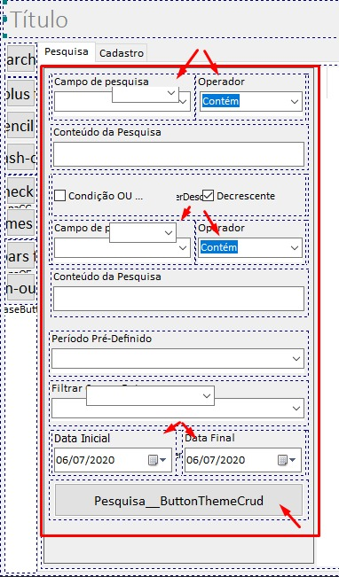
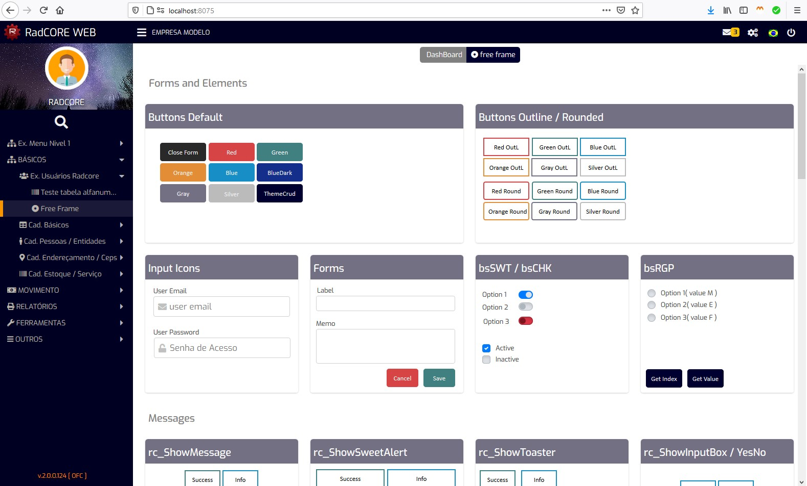

{kind=link}
Para ver todos os pontos que sofreram alteração: Delphi > Search > Find in Files: pesquise por "4.1.0.2" sem aspas
Nota: Se você não fez alterações nos arquivos principais do RadCORE dentro do seu projeto, então basta sobrepor os que foram alterados nesta atualização.
- Verifique sempre se há atualização na estrutura do Banco de Dados para a versão atual
C:\RadCORE_SOURCES_uniGUI\BD updates
- Veja mais alguns detalhes sobre esta versão:( se o arquivo existir )
C:\RadCORE_SOURCES_uniGUI\README - v.04.01.00.02.txt
C:\RadCORE_SOURCES_uniGUI\README - v.04.01.00.02-English.txt - RC ELEMENTS: Convert VCL to UNIGUI
- Bug Fix para o TUniContainerPanel
- Bug Fix na conversão das imagens de "TSpeedButton" e "TImage"
- Possibilidade de converter componentes básicos de FMX para UNIGUI
- FUNÇÔES / PROCEDURES
- rc_AdjustEditColorsExecute
- Melhoria para correta digitação do ENTER em um TUniMEMO
( thanks to DIMAS )
- Main Form
- Traduções em mensagens de aviso e erro
- Bug Fix ao exibir "FORM MODAL"
( rc_MainMenuClick / rc_AddFormFramInTab)
Para ver todos os pontos que sofreram alteração: Delphi > Search > Find in Files: pesquise por "4.1.0.1" sem aspas
Nota: Se você não fez alterações nos arquivos principais do RadCORE dentro do seu projeto, então basta sobrepor os que foram alterados nesta atualização.
- Verifique sempre se há atualização na estrutura do Banco de Dados para a versão atual
C:\RadCORE_SOURCES_uniGUI\BD updates
- Veja mais alguns detalhes sobre esta versão:( se o arquivo existir )
C:\RadCORE_SOURCES_uniGUI\README - v.04.01.00.01.txt
C:\RadCORE_SOURCES_uniGUI\README - v.04.01.00.01-English.txt - RC ELEMENTS: Convert VCL to UNIGUI
- Adição do TUniCheckBox
- Adição do TUniSpinEdit
- Possibilidade de converter componente Não DbWare em DbWare
Ex: TEdit -> TUniDBEdit
- FUNÇÔES / PROCEDURES
- rc_ShowHideObject
- Nova opção para centralizar o objeto
- Nova opção para inverter a animação( de baixo para cima )
- frmBaseCRUD / frmBaseCRUDDetail
- Ajustes na animação do Menu de Consulta no frmBaseCRUD quando em modo RTL
- Ajustes nas traduções e layout
( thanks for bug track Mohammed bouhlal )
- Main Form
- Ajustes no Menu Principal quando optado por não fechar o MENU ao selecionar uma opção que já está aberta
- VALIDAÇÃO DINÂMICA
- Prevenção contra erros no atributo "valid:"
- Melhoria para detectar o TUniMEMO
Para ver todos os pontos que sofreram alteração: Delphi > Search > Find in Files: pesquise por "4.1.0.0" sem aspas
Nota: Se você não fez alterações nos arquivos principais do RadCORE dentro do seu projeto, então basta sobrepor os que foram alterados nesta atualização.
- Verifique sempre se há atualização na estrutura do Banco de Dados para a versão atual
C:\RadCORE_SOURCES_uniGUI\BD updates
- Veja mais alguns detalhes sobre esta versão:( se o arquivo existir )
C:\RadCORE_SOURCES_uniGUI\README - v.04.01.00.00.txt
C:\RadCORE_SOURCES_uniGUI\README - v.04.01.00.00-English.txt - DOCUMENTAÇÃO
- Melhorias na documentação sobre lookups dinâmicos
- Correções
- RC ELEMENTS
- Adição dos Novos atributos
- Ajuste de conflitos com VCL/FMX
- Novo:Convert VCL to UNIGUI
- RC WIZARD
- Corrigido a inclusão da porta definida no arquivo de configuração
( thanks for bug track Mohammed bouhlal )
- CSS PADRÃO
- várias classes novas
- RESPONSIVIDADE
- Melhorias e bug fixes em alguns atributos
- FUNÇÔES / PROCEDURES
- rc_ShowHideObject
Exibe / Esconde um objeto( panel ) com animação
( veja exemplo: TMainForm.btnNotificationsClick )
- rc_ShowSweetAlert
Bug Fix com uso de apóstofros( idioma Francês... )
( thanks for bug track Mohammed bouhlal )
- rc_LoadConfig / rc_LoadTheme
Melhorias para aplicação do símbolo/nome de moeda escolhido
( thanks for bug track Mohammed bouhlal )
- frmBaseCRUD / frmBaseCRUDDetail
- Ajustes na animação do Menu de Consulta no frmBaseCRUD quando em modo RTL
- Ajustes nas traduções e layout
( thanks for bug track Mohammed bouhlal )
- Main Form
- Ajustes na animação do Menu Principal quando em modo RTL
- mkm_validade
- Melhorias e bug fixes
Para ver todos os pontos que sofreram alteração: Delphi > Search > Find in Files: pesquise por "4.0.0.6" sem aspas
Nota: Se você não fez alterações nos arquivos principais do RadCORE dentro do seu projeto, então basta sobrepor os que foram alterados nesta atualização.
- Verifique sempre se há atualização na estrutura do Banco de Dados para a versão atual
C:\RadCORE_SOURCES_uniGUI\BD updates
- Veja mais alguns detalhes sobre esta versão:( se o arquivo existir )
C:\RadCORE_SOURCES_uniGUI\README - v.04.00.00.06.txt
C:\RadCORE_SOURCES_uniGUI\README - v.04.00.00.06-English.txt - CONTROLE DE TEMAS
- Nova opção para Definir o tipo do MENU PRINCIPAL
- Nova opção para COPIAR/COLAR/UNDO as cores entre os objetos
- FUNÇÔES / PROCEDURES
- rc_GetNextID
Parâmetro "where" opcional
- rc_ResizeBlocks
Adequação para os estilos de menus
- rc_ScreenUpdate
Adequação para os estilos de menus
- rc_LoadTheme
Adequação para os estilos de menus
- rc_SaveTheme
Adequação para os estilos de menus
- frmBaseCRUD / frmBaseCRUDDetail
- novo parÂmetro para tentar compatibilizar CRUDs que não deletam registros fisicamente
- Bug Fix quando um grid está sem o datasource
( thanks for dedect this tip to FABIO OLIVEIRA )
- Tradução para o idioma selecionado das opções de pesquisa
( thanks for dedect this tip to Mohammed Bouhlal )
- Main Form
Adequação para os estilos de menus
Outros ajustes
- mkm_dbcombobox
- prevenção contra erros e melhorias
- mkm_validade
- Novos atributos
valid:numbers
valid:letters
- mkm_layout
Adequação para os estilos de menus
Para ver todos os pontos que sofreram alteração: Delphi > Search > Find in Files: pesquise por "4.0.0.5" sem aspas
Nota: Se você não fez alterações nos arquivos principais do RadCORE dentro do seu projeto, então basta sobrepor os que foram alterados nesta atualização.
- Verifique sempre se há atualização na estrutura do Banco de Dados para a versão atual
C:\RadCORE_SOURCES_uniGUI\BD updates
- Veja mais alguns detalhes sobre esta versão:( se o arquivo existir )
C:\RadCORE_SOURCES_uniGUI\README - v.04.00.00.05.txt
C:\RadCORE_SOURCES_uniGUI\README - v.04.00.00.05-English.txt - Arquivo de CSS padrão.
Copiar o arquivo abaixo para pasta do seu projeto:C:\RadCORE_Fontes_uniGUI\inetpub\wwwroot\radcore\files\css\servermodule_customcss.css
- RC WIZARD
- Pequenos Ajustes
- RC ELEMENTS
- Adição dos Novos atributos
- ajuste para compatibilizar com FMX
( thanks to CICERO BILLO )
- RESPONSIVIDADE
- Ajuste para evitar o processamento de blocos ENABLED=FALSE
- FUNÇÔES / PROCEDURES
- rc_GetRecord
Correção de bug com "LIMIT"
- rc_RenderLookUpControls
Melhorias na renderição do combobox dinâmico( "cbbx:" )
- rc_PosHintProperty
Melhoria e prevenção contra bug
- frmCadCOMPRAS
- Mestre / Detalhes BUG Fixes
- Alteração na estrutura das tabelas COMPRAS e COMPRAS_PRODUTOS
- frmTHEMES
- Ajuste nos controles "spin"
- frmBaseCRUD / frmBaseCRUDDetail
- Ajustes na renderização de combobox dinâmico
- Ajustes para novos atributos da validação dinâmica
- Main Form
- Ajuste na exibição do MENU para RTL
- mkm_validade
- Novos atributos e parâmetros de validação
valid:not-exists
valid:blank ifvisible:aaaa
valid:blank ifenabled:aaaa
- BUG FIX para validação dinâmica de CPF/CNPJ
- Refatoração para adequação aos novos recursos
- rc_UpdateMainControls
- Preparativos pra recurso futuro: MULTI MENUS
Para ver todos os pontos que sofreram alteração: Delphi > Search > Find in Files: pesquise por "4.0.0.4" sem aspas
Nota: Se você não fez alterações nos arquivos principais do RadCORE dentro do seu projeto, então basta sobrepor os que foram alterados nesta atualização.
- Verifique sempre se há atualização na estrutura do Banco de Dados para a versão atual
C:\RadCORE_SOURCES_uniGUI\BD updates
- Veja mais alguns detalhes sobre esta versão:( se o arquivo existir )
C:\RadCORE_SOURCES_uniGUI\README - v.04.00.00.04.txt
C:\RadCORE_SOURCES_uniGUI\README - v.04.00.00.04-English.txt - Arquivo de CSS padrão.
Copiar o arquivo abaixo para pasta do seu projeto:C:\RadCORE_Fontes_uniGUI\inetpub\wwwroot\radcore\files\css\servermodule_customcss.css
- rc_ResizeBlocks
- Ajuste nos blocos responsivos
- rc_ScreenUpdate
- Ajuste para o novo menu desacoplado
- rc_LoadTheme
- Preparativos pra recurso futuro: MULTI MENUS
- rc_OpenLink
- Ajuste para compatibilizar com browser no iOS
( thanks to Galbor from MALTA )
- frmGenericModalForm
- Bug Fix para fechar form ao pressionar a tecla ESC
- frmDEMO_FORMS
- Bug Fix demos
- frmBaseCRUD / frmBaseCRUDDetail
- compatibilização do grid de pesquisa com FDMemtable
- Ajuste de layout do panel de pesquisa avançada
( thanks to Santiago from ARGENTINA )
- rc_ResizeBlocksExecute
- Novo parâmetro de controle interno
- rc_AdjustFormsSize
- Bug Fix novo controle de menu desacoplado
- Main Form
- Ajuste de layout do panel de controle do Menu Principal
( thanks to Santiago from ARGENTINA )
- Preparativos pra recurso futuro: MULTI MENUS
- Melhoria na animação do panel de notificações
- rc_AddFormFrameInTab
- Bug Fix abertura de forms
- rc_UpdateMainControls
- Preparativos pra recurso futuro: MULTI MENUS
Para ver todos os pontos que sofreram alteração: Delphi > Search > Find in Files: pesquise por "4.0.0.3" sem aspas
Nota: Se você não fez alterações nos arquivos principais do RadCORE dentro do seu projeto, então basta sobrepor os que foram alterados nesta atualização.
- Verifique sempre se há atualização na estrutura do Banco de Dados para a versão atual
C:\RadCORE_SOURCES_uniGUI\BD updates
- Veja mais alguns detalhes sobre esta versão:( se o arquivo existir )
C:\RadCORE_SOURCES_uniGUI\README - v.04.00.00.03.txt
C:\RadCORE_SOURCES_uniGUI\README - v.04.00.00.03-English.txt - MainForm
- Ajuste para o menu ser fechado mesmo quando o formulário clicado já estiver aberto
- frmBaseCRUD
- Ajuste para ocultar o panel de pesquisa avançada sempre que clicar no botão de pesquisa
Para ver todos os pontos que sofreram alteração: Delphi > Search > Find in Files: pesquise por "4.0.0.2" sem aspas
Nota: Se você não fez alterações nos arquivos principais do RadCORE dentro do seu projeto, então basta sobrepor os que foram alterados nesta atualização.
- Verifique sempre se há atualização na estrutura do Banco de Dados para a versão atual
C:\RadCORE_SOURCES_uniGUI\BD updates
- Veja mais alguns detalhes sobre esta versão:( se o arquivo existir )
C:\RadCORE_SOURCES_uniGUI\README - v.04.00.00.02.txt
C:\RadCORE_SOURCES_uniGUI\README - v.04.00.00.02-English.txt - RESPONSIVIDADE
- Ajuste para evitar o processamento de blocos ENABLED=FALSE
- frmLookup / frmLookup_Lite
- Ajuste para ocultar o grid quando a pesquisa não é encontrada
- frmCadFUNCIONARIOS
- Adicionado exemplo de pesquisa LOOKUP com atributo "onlysearch"
Para ver todos os pontos que sofreram alteração: Delphi > Search > Find in Files: pesquise por "4.0.0.1" sem aspas
Nota: Se você não fez alterações nos arquivos principais do RadCORE dentro do seu projeto, então basta sobrepor os que foram alterados nesta atualização.
- Verifique sempre se há atualização na estrutura do Banco de Dados para a versão atual
C:\RadCORE_SOURCES_uniGUI\BD updates
- Veja mais alguns detalhes sobre esta versão:( se o arquivo existir )
C:\RadCORE_SOURCES_uniGUI\README - v.04.00.00.01.txt
C:\RadCORE_SOURCES_uniGUI\README - v.04.00.00.01-English.txt - MAIN FORM
- Ajuste para evitar falhas na abertura/fechamento do menu principal
- NOVOS DASHBOARDS
- Ajuste para exibir o "collapse" apenas em MOBILE
- NOVOS ATRIBUTOS DINÂMICOS
- "keyboard:off" Impede a exibição do teclado mobile
- frmBaseCRUDDetail
- Ajuste do ForceFit inicial
- RC ELEMENTS
- adicionado o número da versão do RC ELEMENTS no caption
- Novo atributo "keyboard:off"
- RC WIZARD
- Ajuste para salvar a Senha do Servidor nos parâmetros
Para ver todos os pontos que sofreram alteração: Delphi > Search > Find in Files: pesquise por "4.0.0.0" sem aspas
Nota: Se você não fez alterações nos arquivos principais do RadCORE dentro do seu projeto, então basta sobrepor os que foram alterados nesta atualização.
- Verifique sempre se há atualização na estrutura do Banco de Dados para a versão atual
C:\RadCORE_SOURCES_uniGUI\BD updates
- Veja mais alguns detalhes sobre esta versão:( se o arquivo existir )
C:\RadCORE_SOURCES_uniGUI\README - v.04.00.00.00.txt
C:\RadCORE_SOURCES_uniGUI\README - v.04.00.00.00-English.txt - Arquivo de CSS padrão.
Copiar o arquivo abaixo para pasta do seu projeto:C:\RadCORE_Fontes_uniGUI\inetpub\wwwroot\radcore\files\css\servermodule_customcss.css
C:\RadCORE_Fontes_uniGUI\inetpub\wwwroot\radcore\files\css\servermodule_customcss_userdef.css - RESPONSIVIDADE
- Ajuste para resolução HD
( thanks to Fabio Oliveira )
- CONTROLE DE TEMAS / LAYOUT
- Novas Opções de Fontes
- Nova opção para definir a largura da barra de scroll
- Nova opção para parametrizar as cores do UniDBGRID
- Nova opção para parametrizar o layout UniDBGRID
- Nova opção para padronizar a exibição da nova barra de navegação do UniDBGRID
- Nova opção para definir a animação e o tipo de "load mask" com ou sem background
- Ajuste na opção de formulários sem bordas arredondadas
- Prévia do DARK MODE
- MAIN FORM
- Exibição de um ícone "KEY" na base do MENU LATERAL quando usuário for MASTER
- Novo menu lateral desacoplado com animação mais suave
- Dashboard desacoplado e carregado dinamicamente na aba principal
- MENU DINÂMICO
- Melhoria no controle de permissão para HIDDEN OPTIONS
- Nova opção para geração de opções que pedem obrigatoriamente acesso MASTER
- Nova opção para "não exibir" uma opção do menu MESMO SENDO "ADMIN"
- NOVOS DASHBOARDS
- e-Commerce
- CRM
- Hospital
- School
- CSS PADRÂO
- Novos modelos de botões sem background
- Novo modelo com cor do caption respondendo corretamente ao HOVER
- Melhoria layout DateTimePicker
- Dezenas de novas classes
- Criação do arquivo secundário para o usuário do radcore possa adicionar suas classes sem alterar o arquivo padrão
- UniDBGRID
- Nova barra de navegação dinâmica
- Botão refresh que atualiza a query
- Novos elementos de layout vinculados ao controle de temas
- frmBASECRUD / frmBASECRUDDETAIL
- Diversas melhorias no layout/responsividade
- Modelo de CRUD com Botões Laterais se ajustam para MOBILE
- Modelo de CRUD com Captions nos Botões
- Escolha do padrão de cor
- Escolha do padrão do Botão de Ações( com ou sem BG)
- Painel de pesquisa avançada desacoplada e com animação suave
- Parametrização do padrão de PESQUISA
- Refatoração dos "Action Buttons" sem uso de "widgets" e "fields editor ( sem uso de OnGetText )"
- Vinculação a qualquer botão contido no formulário herdado do frmBaseCRUD
- NOVA UNIT "mkm_createcomponents"
- Criação dinâmica de blocos responsivos, labels, edits etc.
- NOVOS ATRIBUTOS DINÂMICOS
- "border:" Criação de bordas totais ou parciais em um container
- MELHORIAS EM ATRIBUTOS DINÂMICOS
- collapse: parâmetro "icons:"
- - "icons:aaaa aaaa" para customização dos ícones do "collapse:"
- - "icons:off" para permitir que qualquer objeto seja o acionador do "collapse:" sem uso de ícones
- "state-color" e "state-font-color"
- Poderão ser aplicados em componentes de edição( uniEDIT etc )
- - uso dos identificadores do controle de TEMAS nos campos de edição para manter o padrão do TEMA ATUAL:
- - [[EDIT_COLOR]]
- - [[EDIT_FONT_COLOR]]
- - [[EDIT_COLOR_READONLY]]
- - [[EDIT_FONT_COLOR_READONLY]]
- "ico-stack:" parâmetro "type:"
- - circle
- - square
- "valid-required:"
- - Ajuste no posicionamento do marcador
- "valid:"
- - Ajuste na validação "min-" e "max-" quando em conjunto com o "notblank"
- "cbx-fill:"
- - Preenche um combobox com uma lista de arquivos
- - Parâmetro "folder:"
- LOOKUP DINÂMICO
- "getsearchfield:"
- - Exibe no lookup o conteúdo de outro campo diferente do "LISTFIELD"
- "lkponlysearch"
- - Permite criar um lookup sem vínculo com datafield
- frmCadCOMPRAS
- Adicionado atributos reativos no grid DETAIL
- Ajuste na atualização do lookup de produtos( limpeza ao incluir )
- IMPORTANTE: Atualização na estrutura da tabela "COMPRAS_PRODUTOS". Verifique o modelo padrão.
- MEGA DEMO
- FREEFRAME removido e seu conteúdo foi dividido em vários DEMOS isolados
- RC_TRANSLATE
- Ajuste para prevenir erros
- Tradução da mensagem de erro referente ao controle de LIMITE MAXIMO DE ABAS ABERTAS
- Outras Melhorias
- "rc_RenderControls" agora permite renderizar apenas um objeto.
- Ajuste para manter um possível "_"( digitado pelo usuário ) no nome da aplicação criada pelo WIZARD
- exibição das setas laterais no "bsTABS" em MOBILE( Issue feedback: Andrew Stepanchuk from Ukraine )
- Ajustes diversos
- RC ELEMENTS
- Ajuste na exibição de todos atributos disponíveis e seus respectivos parâmetros
- RC WIZARD
- Ajuste na configuração do Idioma
- Idioma inglês atualizado para "English US" e "English GB"
Para ver todos os pontos que sofreram alteração: Delphi > Search > Find in Files: pesquise por "3.4.0.1" sem aspas
Nota: Se você não fez alterações nos arquivos principais do RadCORE dentro do seu projeto, então basta sobrepor os que foram alterados nesta atualização.
- Verifique sempre se há atualização na estrutura do Banco de Dados para a versão atual
C:\RadCORE_SOURCES_uniGUI\BD updates
- Veja mais alguns detalhes sobre esta versão:( se o arquivo existir )
C:\RadCORE_SOURCES_uniGUI\README - v.03.04.00.01.txt
C:\RadCORE_SOURCES_uniGUI\README - v.03.04.00.01-English.txt - Arquivo de CSS para rc_CallOut.
Copiar a pasta abaixo para pasta do seu projeto:C:\RadCORE_SOURCES_uniGUI\inetpub\wwwroot\radcore\files\css\callout
- BUG FIXES
- Bug fix nos atributos "valid-required" e "form-label"
- Atributo "ico-stack:"
- Adicionado parâmetro "size:"
- frmFREEFRAME
- Adicionado parâmetro "size:" no exemplo do atributo "ico-stack"
- RC ELEMENTS
- Adicionado novo parâmetros "size:" para o atributo "ico-stack"
- RC WIZARD
- Corrigida visualização do "Server IP"
Para ver todos os pontos que sofreram alteração: Delphi > Search > Find in Files: pesquise por "3.4.0.0" sem aspas
Nota: Se você não fez alterações nos arquivos principais do RadCORE dentro do seu projeto, então basta sobrepor os que foram alterados nesta atualização.
- Verifique sempre se há atualização na estrutura do Banco de Dados para a versão atual
C:\RadCORE_SOURCES_uniGUI\BD updates
- Veja mais alguns detalhes sobre esta versão:( se o arquivo existir )
C:\RadCORE_SOURCES_uniGUI\README - v.03.04.00.00.txt
C:\RadCORE_SOURCES_uniGUI\README - v.03.04.00.00-English.txt - Arquivo de CSS padrão.
Copiar o arquivo abaixo para pasta do seu projeto:C:\RadCORE_Fontes_uniGUI\inetpub\wwwroot\radcore\files\css\servermodule_customcss.css
- Arquivo de JS.
Copiar o arquivo abaixo para pasta do seu projeto:C:\RadCORE_Fontes_uniGUI\inetpub\wwwroot\radcore\files\js\rc_webcam\beep.js
C:\RadCORE_Fontes_uniGUI\inetpub\wwwroot\radcore\files\js\rc_webcam\jsQR.js
C:\RadCORE_Fontes_uniGUI\inetpub\wwwroot\radcore\files\js\rc_webcam\rc_webcam.js
C:\RadCORE_Fontes_uniGUI\inetpub\wwwroot\radcore\files\js\callout\callout.js - Atributo "ico-pos:"
- Ajuste na exibição
- Atributo "ico-stack:"
- Ajuste na exibição
- frmFREEFRAME
- Adicionado exemplo do novo "form-label:" no bloco "Input Icon"
- Adicionado exemplo do novo "rc_CallOut:" no bloco "Input Icon"
- Adicionado exemplo do novo "valid-required:" no componente "edSite"
- Melhorias e bug fix no exemplo da WEBCAM
- Adicionado exemplo de leitura de QRCODE no exemplo da WEBCAM
- rc_AddFormFrameInTab
- Prevenção contra erros quando não houver o PageControl padrão( feedback Mohamed Erol )
- Ajuste da responsividade quando um form/frame é adicionado a um container de forma dinâmica
- Login
- Melhorias no layout e posicionamento
- Background com imagens para DESKTOP / MOBILE
- Exibição de Logotipo em MOBILE PORTRAIT
- Adicionado novo "valid-required:" nos dados do usuário
- Adicionado validações dinâmicas no registro de usuário
- Adicionado consulta de "email já cadastrado" no registro de usuário
- Adicionado exibição animada da digitação do código de cadastro no registro de usuário
- rc_PermissionVerify
- Melhorias na permissão de usuários MASTER
- rc_ConnectFireDAC
- Ajuste na configuração para SQLSERVER
( FeedBack from Fabio Salviano )
- frmBaseCRUD
- Ajuste para exibição automática dos dados do registro quando chamado com opção: aftShowReg
- rc_AdjustEditColorsExecute
- Ajuste na renderização de "Number Edits"
- Atributo "hint:" ( tooltips )
- Ajuste na exibição do Tipo / Hint informado
- Novos Recursos
- rc_CallOut
- Atributo "form-label" para gerar labels animados em componentes de edição
- QRCODE Reader
( thanks to Fabio Oliveira )
- RC ELEMENTS
- Ajuste para novos atributos
- RC WIZARD
- Adicionado "Server IP"
- DOCUMENTAÇÃO
- Melhoria e/ou novos tópicos adicionados
Para ver todos os pontos que sofreram alteração: Delphi > Search > Find in Files: pesquise por "3.3.3.2" sem aspas
Nota: Se você não fez alterações nos arquivos principais do RadCORE dentro do seu projeto, então basta sobrepor os que foram alterados nesta atualização.
- Verifique sempre se há atualização na estrutura do Banco de Dados para a versão atual
C:\RadCORE_SOURCES_uniGUI\BD updates
- Veja mais alguns detalhes sobre esta versão:( se o arquivo existir )
C:\RadCORE_SOURCES_uniGUI\README - v.03.03.03.02.txt
C:\RadCORE_SOURCES_uniGUI\README - v.03.03.03.02-English.txt - Arquivo de CSS padrão.
Copiar o arquivo abaixo para pasta do seu projeto:C:\RadCORE_Fontes_uniGUI\inetpub\wwwroot\radcore\files\css\servermodule_customcss.css
- frmTHEMES
- Adicionado configuração da moeda utilizada para permitir o uso da nova função de geração de valores por extenso com tradução
- Teclado MOBILE
- Novo recurso para evitar a sobreposição do teclado mobile ao dar foco em um campo
- Novo Atributo "ico-pos:"
- Define a posição do ícone em relação ao caption
- frmFREEFRAME
- Adicionado exemplo do novo "ico-pos:" no bloco "Input Icon"
- rc_AddFormFrameInTab
- Ajuste para reconhecer o parâmetro "closebtn" em chamadas dinâmicas( sem ser pelo click do MENU )
- Bug Fix para chamada de LINK através do Menu Dinâmico
- rc_GetLookField
- Ajuste para prevenção de erros no retorno de campos numéricos
- Outras melhorias
- Adicionado geração de valor por extenso( na moeda configurada em frmTHEMES ) no exemplo de RECIBO( Brasil e Global )
- Melhorias na exibição de mensagens de erro genéricas nos CRUDS
- RC ELEMENTS
- Ajuste para o novo atributo "ico-pos:"
- DOCUMENTAÇÃO
- Melhoria e/ou novos tópicos adicionados
Para ver todos os pontos que sofreram alteração: Delphi > Search > Find in Files: pesquise por "3.3.3.1" sem aspas
Nota: Se você não fez alterações nos arquivos principais do RadCORE dentro do seu projeto, então basta sobrepor os que foram alterados nesta atualização.
- Verifique sempre se há atualização na estrutura do Banco de Dados para a versão atual
C:\RadCORE_SOURCES_uniGUI\BD updates
- Veja mais alguns detalhes sobre esta versão:( se o arquivo existir )
C:\RadCORE_SOURCES_uniGUI\README - v.03.03.03.01.txt
C:\RadCORE_SOURCES_uniGUI\README - v.03.03.03.01-English.txt - Arquivo de CSS padrão.
Copiar o arquivo abaixo para pasta do seu projeto:C:\RadCORE_Fontes_uniGUI\inetpub\wwwroot\radcore\files\css\servermodule_customcss.css
- RESPONSIVIDADE
- Melhorias no atributo "scale:"
- Melhorias no atributo "hide:"
- Melhorias no atributo "grid-forcefit:"
- rc_GridDrawCell
- Remoção de comentários
- DBGridUpdate
- Ajuste no 'grid-forcefit:'
- rc_ResizeBlocks
- Melhoria na renderização
- rc_LookUpControlsClear
- Nova função para limpar os controles de um lookup dinâmico
- rc_HtmlToColor
- Nova função para converter uma cor WEB para TCOLOR
- rc_BringToFront
- Nova função para trazer um objeto para o "primeiro plano".
- frmLookup_Lite
- Ajuste na renderização dos atributos do grid
( thanks to Fabio Oliveira )
- frmLogin
- Melhoria nas mensagens de cadastro / reset de senha
- RC ELEMENTS
- Melhorias no Blockfy para converter componentes com "fieldlabel" em labels isolados para melhor compatibilidade com os blocos responsivos
- RC WIZARD
- Alerta para sobrescrita dos arquivos
- Gravação dos dados da empresa para padronização
- DOCUMENTAÇÃO
- Melhoria e/ou novos tópicos adicionados
Para ver todos os pontos que sofreram alteração: Delphi > Search > Find in Files: pesquise por "3.3.3.0" sem aspas
Nota: Se você não fez alterações nos arquivos principais do RadCORE dentro do seu projeto, então basta sobrepor os que foram alterados nesta atualização.
- Verifique sempre se há atualização na estrutura do Banco de Dados para a versão atual
C:\RadCORE_SOURCES_uniGUI\BD updates
- Veja mais alguns detalhes sobre esta versão:( se o arquivo existir )
C:\RadCORE_SOURCES_uniGUI\README - v.03.03.03.00.txt
C:\RadCORE_SOURCES_uniGUI\README - v.03.03.03.00-English.txt - Arquivo de CSS padrão.
Copiar o arquivo abaixo para pasta do seu projeto:C:\RadCORE_Fontes_uniGUI\inetpub\wwwroot\radcore\files\css\servermodule_customcss.css
- RESPONSIVIDADE
- Melhorias na renderização dos atributos dinâmicos do UniDBGrid
- Ajustes no atributo "caption-dots"
- Melhoria na renderização com "noborder-???"
- frmBaseCRUD/frmBaseCRUDDetail
- Melhoria na renderização dos "grids"
- frmFREEFRAME
- Exemplos de "bspills:" com abas muiti coloridas
- rc_GridDrawCell
- Otimização do código
- rc_BootStrapRender
- Ajuste para prevenção de erros na geração de html dinâmico
- mkm_validate
- Ajuste para prevenção de erros
- Novos recursos
- Accordion sem uso de html
- bsPills com as cores das abas personalizáveis
- RC ELEMENTS
- Melhorias no Blockfy
- - fieldlabel converte para label
- Adicionado help sensível
- Adicionado mais opções para exibição de parâmetros e preenchimento dos mesmos
- DOCUMENTAÇÃO
- Melhoria e/ou novos tópicos adicionados
Para ver todos os pontos que sofreram alteração: Delphi > Search > Find in Files: pesquise por "3.3.2.0" sem aspas
Nota: Se você não fez alterações nos arquivos principais do RadCORE dentro do seu projeto, então basta sobrepor os que foram alterados nesta atualização.
- Verifique sempre se há atualização na estrutura do Banco de Dados para a versão atual
C:\RadCORE_SOURCES_uniGUI\BD updates
- Veja mais alguns detalhes sobre esta versão:( se o arquivo existir )
C:\RadCORE_SOURCES_uniGUI\README - v.03.03.02.00.txt
C:\RadCORE_SOURCES_uniGUI\README - v.03.03.02.00-English.txt - Arquivo de CSS padrão.
Copiar o arquivo abaixo para pasta do seu projeto:C:\RadCORE_Fontes_uniGUI\inetpub\wwwroot\radcore\files\css\servermodule_customcss.css
- RESPONSIVIDADE
- Melhorias na renderização do atributo "noborder-???" e suas variantes
- Ajustes nos atributos "width:" / "height:" e suas variantes
- frmGenericModalForm
- corrigido problema em ambiente 64bit
- Novo frmMessage
- corrigido problema em ambiente 64bit
- Novo frmInputBox
- corrigido problema em ambiente 64bit
- frmBaseCRUD/frmBaseCRUDDetail
- Novo "coringa" [[pk-show]] para exibir no grid o conteúdo da chave primária
( ex: frmCadCIDADES )
- Campos SEM DATASOURCE informado irão assumir o "dsMaster" como padrão.
- frmFREEFRAME
- Exemplos do atributo "hint:" otimizados
- rc_GridDrawCell
- Adequação ao coringa [[pk-show]]
- Adicionado alinhamento dinâmico para colunas de valores monetário
- rc_FillComboBox
- Ajuste para prevenção de erros
- MainForm
- Melhoria na renderização
- RC WIZARD
- Adicionado no menu HELP do próprio DELPHI, um link para acesso a uma mapa de teclas de atalho.
( thanks to CICERO BILLO )
- RC ELEMENTS
- Corrigido problema com o "CLONE"
- Melhorias no recurso "COMPLETE"
- Adicionado mais opções para exibição de parâmetros e preenchimento dos mesmos
- Otimizado a colorização dos elementos do código do RadCORE.
- DOCUMENTAÇÃO
- Analisando e aplicando os recursos > Hint Editor > RC Elements > RC Palette > Blank Blocks
- Analisando e aplicando os recursos > Hint Editor > RC Elements > RC Palette > Compound Blocks
- Analisando e aplicando os recursos > Layout > Renderizando o Layout > ToolTips( hint )
- Analisando e aplicando os recursos > Cadastros e Grids
Para ver todos os pontos que sofreram alteração: Delphi > Search > Find in Files: pesquise por "3.3.1.0" sem aspas
Nota: Se você não fez alterações nos arquivos principais do RadCORE dentro do seu projeto, então basta sobrepor os que foram alterados nesta atualização.
- Verifique sempre se há atualização na estrutura do Banco de Dados para a versão atual
C:\RadCORE_SOURCES_uniGUI\BD updates
- Veja mais alguns detalhes sobre esta versão:( se o arquivo existir )
C:\RadCORE_SOURCES_uniGUI\README - v.03.03.01.00.txt
C:\RadCORE_SOURCES_uniGUI\README - v.03.03.01.00-English.txt - Arquivo de CSS padrão.
Copiar o arquivo abaixo para pasta do seu projeto:C:\RadCORE_Fontes_uniGUI\inetpub\wwwroot\radcore\files\css\servermodule_customcss.css
- Arquivo de JS.
Copiar o arquivo abaixo para pasta do seu projeto:C:\RadCORE_Fontes_uniGUI\inetpub\wwwroot\radcore\files\js\rc_webcam\rc_webcam.js
- Arquivo de DLLs
Copiar o arquivo abaixo para pasta do seu projeto:C:\RadCORE_SOURCES_uniGUI\inetpub\wwwroot\radcore\files\lib\Email Indy x32 x64
- RESPONSIVIDADE
- Melhorias na renderização para FORMS.
- frmGenericModalForm
- Adicione ao seu projeto.
- Novo modelo de form MODAL que pode ser herdado.
- formBase
- Ajustes para o novo padrão de renderização de FORMS.
- Novo frmMessage
- Remova o frmMessage do projeto e adicione o novo em "formBase"
- agora herdado de frmGenericModalForm
- Novos efeitos visuais
- Layout aprimorado
- Novo frmInputBox
- Remova o frmInputBox do projeto e adicione o novo em "formBase"
- agora herdado de frmGenericModalForm
- Novos efeitos visuais
- Layout aprimorado
- Novo frmWEBCAM
- agora herdado de frmGenericModalForm
- erros corrigidos
- arquivo js corrigido
- NOVOS ATRIBUTOS
- img-cls: Aplicação de efeitos para imagens
- NOVOS ATRIBUTOS:Lookup Dinâmico
lkpfilter: Mais opções para otimizar operações com lookup sem uso de programação
- frmBaseCRUD
- Pequenas melhorias.
- Novos alertas sobre uso incorreto de alguns "coringas".
- frmBaseCRUDDetail
- Pequenas melhorias.
- Novos alertas sobre uso incorreto de alguns "coringas".
- frmFREEFRAME
- Exemplo de uso do "img-cls:" aplicando efeito ZOOM.
- Exemplo de uso do rc_ShowSweetAlert com retorno de foco em componente especificado.
- Exemplo de CLIPBOARD
- DM_RC
- Otimizado várias funções de controle aos lookups dinâmicos
- NOVAS FUNÇÕES PARA MENSAGENS
- Otimizado várias funções de controle aos lookups dinâmicos
- rc_ShowSweetAlertSuccess
- rc_ShowSweetAlertWarning
- rc_ShowSweetAlertInfo
- rc_ShowSweetAlertError
- rc_ShowSuccess
- rc_ShowInfo
- rc_ShowWarning
- rc_ShowError
- rc_ShowInputBox
- Otimizado para usar qualquer um dos campos como "senha"
- rc_MaskAdjust
- correção do UNMASK para remover uma máscara previamente definida
- mkm_layout
- Ajustes em várias funções de controle de reponsividade
- Ajustes para evitar conflito no uso do atributo "ds:" de alguns atributos de banco de dados
- mkm_translate
- Adicionado opção para tradução do novo atributo de mensagem dinâmica "lkpfilter-empty"
- MainForm
- Restringido o acesso ao botão CONFIG ( frmTHEMES ) com a senha ADMIM PADRÃO( veja uCONST.PAS )
- frmTHEMES
- Ajustado a exibição correta do Switch Button( rcSwt ) para TLS e SSL na configuração de email
- servermodule
- Corrigido a apresentação correta da porta no Tray Icon.
- OUTROS
- Ajustado em todas as funções de tratamento de strings para evitar erros.
( thanks M VAKILI )
- RC WIZARD
- Alterada descrição do package de acordo com a versão do DELPHI
- Novo botão "MORE". Novos parâmetros configuráveis para criação de projetos
- Adicionado opção no Menu do DELPHI para exibir um HELP sobre teclas de atalho.
- RC ELEMENTS
- Remover o BPL anterior e instalar o novo
- Alterada descrição do package de acordo com a versão do DELPHI
- Adicionado o recurso "COMPLETE" para alguns atributos / botões.
- Adicionado o recurso "FONTAWESOME"
- Adicionado novo menu de seleção de temas do editor de código
- Otimizado a colorização dos elementos do código do RadCORE.
- DOCUMENTAÇÃO
- Analisando e aplicando os recursos > Hint Editor.
- Analisando e aplicando os recursos > Layout > Renderizando o Layout
- Alteração importante em: "Renderizando um FORM"
- Analisando e aplicando os recursos > Layout > Renderizando o Layout > Labels: FontAwesome Icons.
- Analisando e aplicando os recursos > Mensagens
- Analisando e aplicando os recursos > LookUps Dinâmicos > Lookup com Filtro Dinâmico.
Para ver todos os pontos que sofreram alteração: Delphi > Search > Find in Files: pesquise por "3.3.0.3" sem aspas
Nota: Se você não fez alterações nos arquivos principais do RadCORE dentro do seu projeto, então basta sobrepor os que foram alterados nesta atualização.
- Verifique sempre se há atualização na estrutura do Banco de Dados para a versão atual
C:\RadCORE_SOURCES_uniGUI\BD updates"
- Veja mais alguns detalhes sobre esta versão:( se o arquivo existir )
C:\RadCORE_SOURCES_uniGUI\README - v.03.03.00.03.txt"
- Arquivo de CSS padrão.
Copiar o arquivo abaixo para pasta do seu projeto:C:\RadCORE_Fontes_uniGUI\inetpub\wwwroot\radcore\files\css\servermodule_customcss.css"
- mkm_layout
- Corrigido o parâmetro "collpased" do atributo "collapse:" para iniciar fechado/aberto.
- rc_DeleteActiveRecord
- Ajustado mensagem após apagar um registro.
- rc_RenderLookUpControls
- Ajustado renderização de lookups dinâmicos quando estão dentro de um bloco responsivo.
- RC WIZARD
- Remover o BPL anterior e instalar o novo
- Novo botão "MORE". Novos parâmetros configuráveis para criação de projetos
- RC ELEMENTS
- Remover o BPL anterior e instalar o novo
- Ajustado resposta do click do HINT/CAPTION quando em ambiente VCL.
- DOCUMENTAÇÃO: Leiam as mudanças
- Em "Erros comuns de compilação / execução", foi adicionado "Blocos Responsivos".
- No tópíco "Analisando e aplicando os recursos -> Menu", foram adicionados mais detalhes.
- No tópíco "Analisando e aplicando os recursos -> Login", foi totalmente refeito.
- Novo tópíco "Analisando e aplicando os recursos -> MainModule".
- Novo tópíco "Analisando e aplicando os recursos -> ServerModule".
- No tópíco "Analisando e aplicando os recursos -> Cadastros e Grids", foi adicionado o tópico "Máscaras de Edição".
Para ver todos os pontos que sofreram alteração: Delphi > Search > Find in Files: pesquise por "3.3.0.2" sem aspas
Nota: Se você não fez alterações nos arquivos principais do RadCORE dentro do seu projeto, então basta sobrepor os que foram alterados nesta atualização.
- Verifique sempre se há atualização na estrutura do Banco de Dados para a versão atual
C:\RadCORE_SOURCES_uniGUI\BD updates"
- Veja mais alguns detalhes sobre esta versão:( se o arquivo existir )
C:\RadCORE_SOURCES_uniGUI\README - v.03.03.00.02.txt"
- Arquivo de CSS padrão.
Copiar o arquivo abaixo para pasta do seu projeto:C:\RadCORE_Fontes_uniGUI\inetpub\wwwroot\radcore\files\css\servermodule_customcss.css"
- CSS Padrão
- Novas classes
- Ajuste na classe "align-btn-caption" para, dinamicamente, se adequar quando estiver em modo RTL
- ATRIBUTOS / BLOCOS RESPONSIVOS
- Novo parâmetro "rtl:" para o Atributo "ico:"
- Melhoria/Novos atribuitos:
- width:
- max-width:
- min-width:
- height:
- max-height:
- min-height:"
- rc_DbGridUpdate
- Melhoria no atributo "grid-noforcefit" quando em MOBILE
- rc_MaskAdjust
- Corrigido o "mtUNMASK" para limpar uma máscara pré-definida.
- mkm_layout
- Melhorias( novos atributos ) e ajustes para prevenir erros.
- mkm_gridblock
- Melhorias( novos atributos ).
- mkm_translate
- Ajustes na tradução de algumas palavras para o alemão.
** thanks Alexander Hofmann from germany.
- frmLOGIN
- Adicionado click na imagem par abertura do site correspondente ao informado em "uConst.pas( SOFTWAREHOUSE_SITE )".
- Melhorias no posicionamento na animação de alguns componentes quando em modo RTL.
**thanks to mr. Mohammed Bouhlal
- frmCadEMPRESAS( Brasil/Global )
- Correção na exibição das colunas.
**thanks to mr. Mohammed Bouhlal
- frmFREEFRAME( Brasil/Global )
- Ajuste dos atributos responsivos de alguns exemplos.
- RC WIZARD
- Remover o BPL anterior e instalar o novo
- Bug Fixes na criação de projeto BASE DB sem CADASTRO DE USUÁRIOS
**thanks Mr. RONY ENCARNACIÓN ( República Dominicana )
- RC ELEMENTS
- Remover o BPL anterior e instalar o novo
- Blockfy
- Melhorado para mais componentes( thanks to CICERO BILLO )
- Parâmetros configuráveis
- Colapsify com parâmetros configuráveis
O Botão "F1-Help" agora exibira no browser o HELP do RadCORE
- DOCUMENTAÇÃO: Leiam as mudanças
- O tópico "Padrões e Convenções" e "Primeira Execução" trocaram de posição para melhor entendimento.
- Em "Primeira Execução", foi adicionado um tópico "Erros comuns de compilação / execução".
- No tópico "Exemplos" foi adicionado o "COMPLETE DEMO" que demonstra o uso de alguns recursos em vídeo.
- No tópico "Criando uma nova opção no projeto -> Novo form herdado" foram atualizados alguns ítens que poderiam gerar erro de criação e criados mais alguns detalhes para melhor explicar o processo.
- Tópíco "Analisando e aplicando os recursos -> Layout -> Renderizando o Layout -> Buttons": Sobre "ico:" e "rtl:'
Para ver todos os pontos que sofreram alteração: Delphi > Search > Find in Files: pesquise por "3.3.0.1" sem aspas
Nota: Se você não fez alterações nos arquivos principais do RadCORE dentro do seu projeto, então basta sobrepor os que foram alterados nesta atualização.
- Verifique sempre se há atualização na estrutura do Banco de Dados para a versão atual
C:\RadCORE_SOURCES_uniGUI\BD updates"
- Veja mais alguns detalhes sobre esta versão:( se o arquivo existir )
C:\RadCORE_SOURCES_uniGUI\README - v.03.03.00.01.txt"
- frmMESSAGE
- Melhoria para evitar erros de tempo de execução
- ATRIBUTOS / BLOCOS RESPONSIVOS
- Melhorias/Correções de bugs de atributos principalmente para MOBILE.
(thanks ao Sr. Andy - da Austrália)
- rc_AddFormFrameInTab
- Novo recurso para abrir um formulário/frame em qualquer container
- RECURSOS / MELHORIAS
- rc_ConsoleLog: Auxilia na busca de possíveis falhas ou acompanhamento da execução.
- frmFREEFRAME
- Ajustamos alguns exemplos para corrigir a capacidade de resposta
- Novos exemplos demonstrando novos recursos
- DOCUMENTAÇÃO
- Adicionados novos tópicos sobre novos recursos
Para ver todos os pontos que sofreram alteração: Delphi > Search > Find in Files: pesquise por "3.3.0.0" sem aspas
Nota: Se você não fez alterações nos arquivos principais do RadCORE dentro do seu projeto, então basta sobrepor os que foram alterados nesta atualização.
- Verifique sempre se há atualização na estrutura do Banco de Dados para a versão atual
C:\RadCORE_SOURCES_uniGUI\BD updates"
- Veja mais alguns detalhes sobre esta versão:( se o arquivo existir )
C:\RadCORE_SOURCES_uniGUI\README - v.03.03.00.00.txt"
- Arquivo de CSS padrão.
Copiar o arquivo abaixo para pasta do seu projeto:C:\RadCORE_Fontes_uniGUI\inetpub\wwwroot\radcore\files\css\servermodule_customcss.css"
- Arquivos de tradução.
SALVE suas traduções e REMOVA todos os arquivos atuais.
Copiar todos os arquivos abaixo para pasta do seu projeto:C:\RadCORE_Fontes_uniGUI\inetpub\wwwroot\radcore\files\translate\"
- RC WIZARD
- Remover o BPL anterior e instalar o novo
- Novos modelos adicionados( BRASIL e GLOBAL )
- Nova opção para não adicionar FORTES REPORT nos novos modelos
- RC ELEMENTS
- Remover o BPL anterior e instalar o novo
- Bug Fixes
- Novo recurso: CLONE
- uconsts
- Adicionado Inglês REINO UNIDO( en_GB )
- RC TRANSLATE
- Adicionado Inglês REINO UNIDO( en_GB )
- Adicionado mais alguns termos.
- Adicionado opção para traduzir o "Header Title" do unidbrid
- Melhorias na tradução para ÁRABE
( thanks to mr. Mohammed Bouhlal ))
- Main Module
- Adicionado itens para tradução do MENU OPÇÃO
- Melhorias na tradução para ÁRABE
( thanks to mr. Mohammed Bouhlal ))
- frmMESSAGE
- Adicionado a tradução para o botão "SUPORTE"
( thanks to mr. Mohammed Bouhlal ))
- frmLookUP e FrmLookUp_Lite
- Melhorias na tradução para ÁRABE
( thanks to mr. Mohammed Bouhlal ))
- BLOCOS RESPONSIVOS( rcBLOCKS )
- Novos atributos, muitas melhorias e novos exemplos.
- mkm_layout
- Novo parâmetro "collapsed" e "collapsed:mobile" do atributo 'collapse:'
- rc_AddFormFrameInTab
- Melhoria para prevenir erros com lookup lite abertos
- FUNÇÕES / MELHORIAS
- rc_AddCssClass / rc_RemoveCssClass: Melhoria na prevenção de erros.
- rc_RenderControlsExecute: Melhorias na prevenção de erros e novas funcionalidades.
- rc_BootStrapRenderExecute: Melhoria na prevenção de erros do "bsvideo:"
- rc_DynamicAlignment: center:parent x-mobile-y e center:parent y-mobile-x
- NOVOS RECURSOS REATIVOS
- field-cls: Altera o CSS de um objeto dependendo do valor do campo referenciado.
- field-ico: Altera o ÍCONE de um objeto dependendo do valor do campo referenciado.
- field-cls-ico: Altera o CSS do ícone um objeto dependendo do valor do campo referenciado.
( thanks to Mr. Fábio Oliveira by your idea )
- DM_RC
Adicionado Inglês REINO UNIDO( en_GB ) para tratamento de mensagens internas e padrões regionais
rc_BuildMENUS: Adicionado controle para opções marcadas como ESCONDIDA / HIDDEN
( thanks to Mr. Zilav for bug tracker )
- frmCadCOMPRAS
Adicionado exemplo de "Header Title" e sumário no UniDBGRID de produtos nos campos QTDE e TOTALPROD
( thanks to Claudinei Massola for bug tracker )
- frmCadUSUARIOS
Corrigido tradução para RUSSO
( thanks to Mr. Zilav for bug tracker )
- frmFREEFRAME
- Otimizado responsividade do demo "qrcode" com novo atributo "max-width"
- Novos exemplos demonstrando novas funcionalidades
( thanks to Mr. Santiago Richard by your idea )
- DOCUMENTAÇÃO
- Adicionado novos tópicos referente aos novos recursos
- Criado um tópico específico para o RC ELEMENTS
Para ver todos os pontos que sofreram alteração: Delphi > Search > Find in Files: pesquise por "3.2.0.8" sem aspas
Nota: Se você não fez alterações nos arquivos principais do RadCORE dentro do seu projeto, então basta sobrepor os que foram alterados nesta atualização.
- Verifique sempre se há atualização na estrutura do Banco de Dados para a versão atual
C:\RadCORE_SOURCES_uniGUI\BD updates"
- Veja mais alguns detalhes sobre esta versão:( se o arquivo existir )
C:\RadCORE_SOURCES_uniGUI\README - v.03.02.00.08.txt"
- Arquivo de CSS padrão.
Copiar o arquivo abaixo para pasta do seu projeto:C:\RadCORE_Fontes_uniGUI\inetpub\wwwroot\radcore\files\css\servermodule_customcss.css"
- Arquivo(s) de imagem(ns).
Copiar o arquivo abaixo para pasta do seu projeto:C:\RadCORE_SOURCES_uniGUI\inetpub\wwwroot\radcore\files\images\not-found.jpg"
- RC WIZARD
- Bug Fixes
- Remover o BPL anterior e instalar o novo
- RC ELEMENTS
- Bug Fixes
- Remover o BPL anterior e instalar o novo
- mkm_layout
- Novo atributo 'closeall:off' para não exibir o botão para fechar todas as abas abertas
- rc_AddFormFrameInTab
- Melhoria para prevenir erros com lookup lite abertos
Para ver todos os pontos que sofreram alteração: Delphi > Search > Find in Files: pesquise por "3.2.0.7" sem aspas
Para ver todos os pontos que sofreram alteração para redução de "warnings"( opcional ): Delphi > Search > Find in Files: pesquise por "3.2.0..7" sem aspas
Nota: Se você não fez alterações nos arquivos principais do RadCORE dentro do seu projeto, então basta sobrepor os que foram alterados nesta atualização.
- Verifique sempre se há atualização na estrutura do Banco de Dados para a versão atual
C:\RadCORE_SOURCES_uniGUI\BD updates"
- Veja mais alguns detalhes sobre esta versão:( se o arquivo existir )
C:\RadCORE_SOURCES_uniGUI\README - v.03.02.00.07.txt"
- Arquivo de CSS padrão.
Copiar o arquivo abaixo para pasta do seu projeto:C:\RadCORE_Fontes_uniGUI\inetpub\wwwroot\radcore\files\css\servermodule_customcss.css"
- RC WIZARD
- Bug Fixes
- RC ELEMENTS
- Blockfy Bug Fixes
- Melhorias no layout
- New Collapsify
- New Componente Composto CARD com COLLAPSIFY
- New Componente Composto - BS PILL
- Novas funções: rc_Collapse e DynamicCollapse
- Utilizada pelo Collapsify
- rc_ShowMessage
- Bug fix
- rc_PermissionVerify
- Melhoria para verificação de permissionamento individual de opções de impressão de relatórios
- rc_RenderLookUpControls
- Melhoria para prevenir erros e troca da posição do botão "+"( quando existir ) e botão pesquisa.
- formBase
- Melhoria para prevenir erros
- frmCadBASICS
- Melhoria para prevenir erros
- frmCadCLIENTES
- Ajuste na pesquisa de CEP( Brazil Postal Code ) no endereço de entrega e cobrança
- frmFREEFRAME
- Adicionado exemplo de uso do COLLAPSIFY
- frmCadRECIBO
- Melhoria para prevenir erros
- frmReportMenuClientes
- Adicionado controle herdável( evento labShowReportClick ) para permissionamento de impressão de relatórios
- frmCadUSUARIOS
- Bug Fix
- frmTHEMES
- Melhoria para prevenir erros
- frmTranslate
- Melhoria para prevenir erros
- frmWEBCAM
- Melhoria para prevenir erros
- mkm_menus
- Melhoria para prevenir erros
- uMenu_REPORTS
- Adicionado ítens de geração dinâmica de permissionamento para impressão de relatórios individuais
- uMenu_TOOLS
- Alterado descrição dos ítens de permissionamento MASTER e TODOS
- frmBaseCRUD
- Melhorias para resposta de chamadas dinâmicas
- Novo modelo para exibir uma imagem de "dados vazios" demonstrando o uso do novo "state-visible"
- frmBaseCRUDDetail
- Novo modelo para exibir uma imagem de "dados vazios" demonstrando o uso do novo "state-visible"
- frmLookUP
- Melhoria para prevenir erros
- mkm_anim
- Melhoria para prevenir erros
- mkm_dbcombobox
- Nova função para vincular valores ao uniDbComboBox( provided by Mr. JOSAURO )
- mkm_dbfuncs
- Nova função para tratar os novos atributos "reativos"
- state-visible
- state-enable
- state-color
- state-font-color
- state-caption
- state-cls - mkm_email
- Melhoria para prevenir erros
- mkm_func_report
- Melhoria para prevenir erros
- mkm_func_web
- Melhoria para prevenir erros
- mkm_graphs
- Melhoria para prevenir erros
- mkm_gridblock
- bug fix
- aditivo para o novo recurso collapsify
- mkm_graphs
- Melhoria para prevenir erros
- mkm_layout
- Ajuste da barra de scroll para uniforms
- Adicionado TabStop=false para atributo "link:"
- Adicionado TabStop=false para atributo "dial:"
- Adicionado TabStop=false para atributo "mail:"
- mkm_translate
- Novos Ítens para o rc_translate específicos para o frmBaseCRUD
- mkm_validate
- Melhoria para prevenir erros
- str_func
- Melhoria para prevenir erros
- UniFormScreenResize
- Melhoria para prevenir erros
- MainForm.AjaxEvent
- Melhoria para prevenir erros
- rc_AddFormFrameInTab
- Melhoria para prevenir erros
- Melhoria na exbição de mensagens de erro
- Melhoria controle de permissionamento dinâmico
- Melhoria para EXIBIÇÃO / EDIÇÃO DINÂMICA DE REGISTRO
- MainModule
- Novas globais para controle de "estado" do dsMASTER no frmBaseCRUD
Para ver todos os pontos que sofreram alteração: Delphi > Search > Find in Files: pesquise por "3.2.0.6" sem aspas
Nota: Se você não fez alterações nos arquivos principais do RadCORE dentro do seu projeto, então basta sobrepor os que foram alterados nesta atualização.
- Verifique sempre se há atualização na estrutura do Banco de Dados para a versão atual
C:\RadCORE_SOURCES_uniGUI\BD updates"
- Veja mais alguns detalhes sobre esta versão:( se o arquivo existir )
C:\RadCORE_SOURCES_uniGUI\README - v.03.02.00.06.txt"
- rc_ProccessLogin
- Pequenas melhorias nas mensagens de erro e na query de empresas.
- rc_ShowSweetAlert
- Melhoria para apresentação de mensagens em html.
- rc_GetFieldExists
- Melhoria para prevenir erros e pequenas melhorias nas mensagens de erro
- rc_GetTableExists
- Melhoria para prevenir erros e pequenas melhorias nas mensagens de erro
- rc_GetTotRecords
- Melhoria para prevenir erros e pequenas melhorias nas mensagens de erro
- rc_GetFIELD
- Melhoria para prevenir erros e pequenas melhorias nas mensagens de erro
- rc_BuildMainMenu
- Adicionado parâmetro para que, na aba onde o formulário será aberto, seja exibido ou não o ícone de fechamento
- Corrigido exibição de ícones e renderização de opções com link dinâmico para sites
- mkm_menus
- Adicionado parâmetro para que, na aba onde o formulário será aberto, seja exibido ou não o ícone de fechamento
- uMenu_BASICS
- Exemplo de uso do novo recurso de controle de fechamento da aba( Opção Free Frame )
- rc_RenderControlsExecute
- Bug Fix para exibição de ToolTips
- rc_BootStrapRenderExecute
- Renderização do parâmetro para que, na aba onde o formulário será aberto, seja exibido ou não o ícone de fechamento
- MainForm.htmlFrameAjaxEvent
- Controle do parâmetro para que, na aba onde o formulário será aberto, seja exibido ou não o ícone de fechamento
- rc_AddFormFrameInTab
- Controle do parâmetro para que, na aba onde o formulário será aberto, seja exibido ou não o ícone de fechamento
Para ver todos os pontos que sofreram alteração: Delphi > Search > Find in Files: pesquise por "3.2.0.5" sem aspas
Nota: Se você não fez alterações nos arquivos principais do RadCORE dentro do seu projeto, então basta sobrepor os que foram alterados nesta atualização.
- Verifique sempre se há atualização na estrutura do Banco de Dados para a versão atual
C:\RadCORE_SOURCES_uniGUI\BD updates"
- Veja mais alguns detalhes sobre esta versão:( se o arquivo existir )
C:\RadCORE_SOURCES_uniGUI\README - v.03.02.00.05.txt"
- rc_GridDrawCell
- Bug fix Em um mestre detalhe, ao voltar do formulário detalhe, a coluna de chave primária oculta do Grid Master ficava visível.( feedback Junior Cesar )
- rc_ProccessLogin
- Cookie para memorizar o idioma selecionado do usuário.
Obs: Usei cookies para compatibilizar esse possível recurso com as versões do RadCORE que não usam banco de dados.
- frmMESSAGE
- Correção dos captions dos botões quando for do tipo "ERROR" e ajuste para o botão RESTART finalizar apenas a sessão atual.
- rc_PermissionVerify
- Melhorias no controle de permissão multi empresa
- rc_PrepareDetailForm
- Adicionado controle de permissão de acesso padrão a chamada de formulários DETAIL dinâmicos.
- frmCadCLIENTES
- Bug fix para o controle de permissão no acesso da aba de licenças.
- frmCadTB_COMPOUNDPK
- Novo formulário para demonstrar o uso de chave composta com sequencial herdado de frmBaseCRUD
- uMenu_BASICS
- Novo exemplo de criação de permissão dinâmica para formulários DETAIL
- frmBaseCRUD / frmBaseDETAILCRUD
- Melhoria na performance de abertura e pesquisas
- Fechamento automático do formulário quando tiver sido chamado de um lookup dinâmico
- mkm_translate
- Novos ítens traduzidos em frmMessage
- Login
- Bug fix para reset de senha
- Cookie para memorizar o idioma selecionado do usuário.
- rc_AddFormFrameInTab
- Adicionado "marcador" para o fechamento automático do formulário chamado de um lookup dinâmico.
Para ver todos os pontos que sofreram alteração: Delphi > Search > Find in Files: pesquise por "3.2.0.4" sem aspas
Nota: Se você não fez alterações nos arquivos principais do RadCORE dentro do seu projeto, então basta sobrepor os que foram alterados nesta atualização.
- Verifique sempre se há atualização na estrutura do Banco de Dados para a versão atual
C:\RadCORE_SOURCES_uniGUI\BD updates"
- Veja mais alguns detalhes sobre esta versão:( se o arquivo existir )
C:\RadCORE_SOURCES_uniGUI\README - v.03.02.00.04.txt"
- RC_Elements
- Removido acionamento por duplo click( obrigado Mr. CICERO )
- dm_rc
- Bug fix na renderização dos lookups dinâmicos
- Melhorias na geração de menus dinâmicos
- Melhorias na função rc_ShowMessage( feedback by FABIO OLIVEIRA )
- frmTHEMES
- Novo parâmetro TABS OFF para manter apenas um formulário aberto
- Main
- Bug fix na apresentação do título do formulário aberto dinamicamente.
- Adequação ao novo TABS OFF.
- mkm_layout
- Nova função para gerar as informações dos blocos de um formulário para testes em RUNTIME( contribuição de JOAS e adaptado para INI )
Para ver todos os pontos que sofreram alteração: Delphi > Search > Find in Files: pesquise por "3.2.0.3" sem aspas
Nota: Se você não fez alterações nos arquivos principais do RadCORE dentro do seu projeto, então basta sobrepor os que foram alterados nesta atualização.
- Verifique sempre se há atualização na estrutura do Banco de Dados para a versão atual
C:\RadCORE_SOURCES_uniGUI\BD updates"
- Veja mais alguns detalhes sobre esta versão:( se o arquivo existir )
C:\RadCORE_SOURCES_uniGUI\README - v.03.02.00.03.txt"
- Arquivo de CSS padrão.
Copiar o arquivo abaixo para pasta do seu projeto:C:\RadCORE_Fontes_uniGUI\inetpub\wwwroot\radcore\files\css\servermodule_customcss.css"
- RC_Elements
- Na pasta de instalação ( RadCORE MINIMAL/SOURCES ) Crie uma pasta vazia para resolver um problema do RC WIZARD ao criar um novo projeto baseado no MINIMAL( obrigado ao Mr. IDRIS and Mr. CICERO )
- frmBaseCRUD
- Bug fix quando faz chamada dinâmica de um formulário para exibição/edição( feedbak by Mr. JOSAURO )
- frmCadCLIENTES
- Bug Fix em campos de pesquisa.
- Main
- Melhoria na atualização dos controles para responsividade.
- Referências ao FIREDAC
- Removido todas as referências do Firedac nos projetos:
- MINIMAL
- STARTER
- BASE
- MINIMAL
- mkm_layout
- Tooltip ampliado para todos controles( feedback by Mr. Mosy )
Para ver todos os pontos que sofreram alteração: Delphi > Search > Find in Files: pesquise por "3.2.0.2" sem aspas
Nota: Se você não fez alterações nos arquivos principais do RadCORE dentro do seu projeto, então basta sobrepor os que foram alterados nesta atualização.
- Verifique sempre se há atualização na estrutura do Banco de Dados para a versão atual
C:\RadCORE_SOURCES_uniGUI\BD updates"
- Veja mais alguns detalhes sobre esta versão:
C:\RadCORE_SOURCES_uniGUI\README - v.03.02.00.02.txt"
- Arquivo de CSS padrão.
Copiar o arquivo abaixo para pasta do seu projeto:C:\RadCORE_Fontes_uniGUI\inetpub\wwwroot\radcore\files\css\servermodule_customcss.css"
- RC_Elements
- Mais produtividade no acionamento do RC ELEMENTS( Double Click or Right Click on Component ).
- frmBaseCRUD
- Melhoria na responta do atributo "firstshow:0".
- dm_rc
- Correções de bug.
- mkm_qrcode
- Unit para suporte a geração de QRCODE
- mkm_validate
- Correções de bug
- mkm_layout
- Novos atributos para Hint( tooltip )
- Nova função para gerar QRCODE
Para ver todos os pontos que sofreram alteração: Delphi > Search > Find in Files: pesquise por "3.2.0.1" sem aspas
Nota: Se você não fez alterações nos arquivos principais do RadCORE dentro do seu projeto, então basta sobrepor os que foram alterados nesta atualização.
- Verifique sempre se há atualização na estrutura do Banco de Dados para a versão atual
C:\RadCORE_SOURCES_uniGUI\BD updates"
- Veja mais alguns detalhes sobre esta versão:
C:\RadCORE_SOURCES_uniGUI\README - v.03.02.00.01.txt"
- Arquivo de CSS padrão.
Copiar o arquivo abaixo para pasta do seu projeto:C:\RadCORE_Fontes_uniGUI\inetpub\wwwroot\radcore\files\css\servermodule_customcss.css"
- RC_Elements
- Melhoria na compatibilidade com versões antigas do unigui.
- RC Wizard
- Novo modelo: RadCORE MINIMAL.
- dm_rc
- Correções de bug e melhorias.
- LookUps Dinâmicos
- Novo parâmetro para enviar o "FieldMasks" para o grid de pesquisa
- frmCadUSUARIOS
- Correções de bug para o controle de permissão multiempresa
- Adicionado controle de permissão para botões de permissão total e master
- uMenu_TOOLS
- frmLookUP
- Correções de bug exibição do total de registros
- frmLookUPLite
- Correções de bug exibição do total de registros
- mkm_func_web
- Adequação da função "StrTokenClearSql" para limpar acentos ou não
- mkm_graphs
- Correções de bug na geração do gráfico pizza e dognut( thanks to VICTOR NATAN )
Para ver todos os pontos que sofreram alteração: Delphi > Search > Find in Files: pesquise por "3.2.0.0" sem aspas
Nota: Se você não fez alterações nos arquivos principais do RadCORE dentro do seu projeto, então basta sobrepor os que foram alterados nesta atualização.
- Verifique sempre se há atualização na estrutura do Banco de Dados para a versão atual
C:\RadCORE_SOURCES_uniGUI\BD updates"
- Veja mais alguns detalhes sobre esta versão:
C:\RadCORE_SOURCES_uniGUI\README - v.03.02.00.00.txt"
- Arquivo de CSS padrão.
Copiar o arquivo abaixo para pasta do seu projeto:C:\RadCORE_Fontes_uniGUI\inetpub\wwwroot\radcore\files\css\servermodule_customcss.css"
- RC_Elements: Novos Recursos
- New RC Wizard: Crie projetos RADCORE pela IDE do DELPHI
- RTL: Várias melhorias
- dm_rc
- formBase
- frmDEMOWITHFORMMODAL
- frmFREEFRAME
- frmRCBLOCKS
- frmCadCOMPRAS
- frmCadUSUARIOS
- frmCadTHEMES
- frmWEBCAM
- uMenu_BASICS
- frmBaseCRUD
- frmBaseCRUDDetail
- frmBaseReport
- frmBaseReportDefault
- frmBaseReportMenu
- frmLookUPLite
- frmMESSAGE
- mkm_func_web
- mkm_func_report
- mkm_gridblock
- mkm_layout
- mkm_login
- mkm_translate
- mkm_validade
- Login
- Main
- MainModule
Para ver todos os pontos que sofreram alteração: Delphi > Search > Find in Files: pesquise por "3.1.0.63" sem aspas
Nota: Se você não fez alterações nos arquivos principais do RadCORE dentro do seu projeto, então basta sobrepor os que foram alterados nesta atualização.
- Verifique sempre se há atualização na estrutura do Banco de Dados para a versão atual
C:\RadCORE_SOURCES_uniGUI\BD updates"
- Arquivo de CSS padrão.
Copiar o arquivo abaixo para pasta do seu projeto:C:\RadCORE_Fontes_uniGUI\inetpub\wwwroot\radcore\files\css\servermodule_customcss.css"
- dm_rc
- Melhoria/Correção de bug
- rc_GetSQL
- rc_MaskAdjust
- rc_RenderLookUpControls
- rc_LoadConfig: Melhoria para RTL
- rc_LoadTheme
- Novas Funções
- rc_GetJSName
- rc_GetJSID
- rc_ExtEvtKeyDownOnlyNumbers
- frmCadCLIENTES
- Ajuste no novo rc_GetSQL para concatenação
- frmCadCLIENTES_REVISOES
- Ajuste no novo rc_GetSQL para concatenação
- frmCadEMPRESAS
- Ajuste no novo rc_GetSQL para concatenação( feedback Fabio Oliveira )
- frmCadUSUARIOS
- Ajuste no parâmetros da query USUARIOS_EMPRESAS
- frmCadTHEMES
- Melhoria para RTL
- mkm_menus
- Ajustes e melhoria para idioma ÁRABE
- frmBaseCRUD
- Ajustes Layout / SQL Server
- mkm_anim
- Adicionado novas animações pré-definidas
- mkm_translate
- Ajustes para facilitar tradução para ÁRABE
- frmLOGIN
- Ajustes para RTL
- Adicionado nova animação
- MAIN
- Ajustes para RTL
Para ver todos os pontos que sofreram alteração: Delphi > Search > Find in Files: pesquise por "3.1.0.62" sem aspas
Nota: Se você não fez alterações nos arquivos principais do RadCORE dentro do seu projeto, então basta sobrepor os que foram alterados nesta atualização.
- Verifique sempre se há atualização na estrutura do Banco de Dados para a versão atual
C:\RadCORE_SOURCES_uniGUI\BD updates"
- dm_rc
- Melhoria/Correção de bug
- rc_GetSQL: compatibilização da concatenação de strings
- frmCadCLIENTES
- Aplicado novo rc_GetSQL para concatenação
- frmCadCLIENTES_REVISOES
- Aplicado novo rc_GetSQL para concatenação
- frmCadEMPRESAS
- Aplicado novo rc_GetSQL para concatenação( feedback Fabio Oliveira )
- frmBaseCRUD
- Adicionado controle da cláusula "TOP" para SQLSERVER( feedback Mohamed Ammar )
- mkm_translate
- Corrigido problema com alguns formulários de cadastro quando ativado idioma INGLÊS, ESPANHOL, FRANCÊS e RUSSO
Para ver todos os pontos que sofreram alteração: Delphi > Search > Find in Files: pesquise por "3.1.0.61" sem aspas
Nota: Se você não fez alterações nos arquivos principais do RadCORE dentro do seu projeto, então basta sobrepor os que foram alterados nesta atualização.
- Arquivo de CSS padrão.
Copiar o arquivo abaixo para pasta do seu projeto:C:\RadCORE_Fontes_uniGUI\inetpub\wwwroot\radcore\files\css\servermodule_customcss.css"
- Verifique sempre se há atualização na estrutura do Banco de Dados para a versão atual
C:\RadCORE_SOURCES_uniGUI\BD updates"
- dm_rc
- Melhoria/Correção de bug
- Correção da nomenclatura nas funções com prefixo "Dinamic"
- rc_LoadTheme
- rc_SaveTheme
- rc_MaskAdjust
- rc_RenderLookUpControls
- Nova(s) Função(ões)
- rc_CloseTab
- frmCadUSUARIOS
- Correção de bug na geração dinâmica do controle de permissionamento
- frmTHEMES
- Nova opção para controle do número de abas abertas.
- mkm_menus
- Correção de bug na geração dinâmica do controle de permissionamento
- uMenu_BASICS
- Adicionado, como exemplo, a permissão '[A]' na opção RC_RACING
- frmBaseCRUD
- Prevenção contra erro em componentes que não tem um datasource vinculado
- frmBaseCRUDDetail
- Prevenção contra erro em componentes que não tem um datasource vinculado
- mkm_layout
- Configuração padrão para o teclado mobile quando aplicado o atributo "mask"
- Main
- htmlFrameAjaxEvent: Novo controle para fechamento de todas as abas abertas
- rc_AddFormFrameInTab: Novo controle para fechamento de todas as abas abertas
Para ver todos os pontos que sofreram alteração: Delphi > Search > Find in Files: pesquise por "3.1.0.60" sem aspas
Nota: Se você não fez alterações nos arquivos principais do RadCORE dentro do seu projeto, então basta sobrepor os que foram alterados nesta atualização.
- Pasta padrão dos fontes renomeada para C:\RadCORE_SOURCES_uniGUI
- Arquivo de CSS padrão. Várias melhorias / ajustes.
Copiar o arquivo abaixo para pasta do seu projeto:C:\RadCORE_Fontes_uniGUI\inetpub\wwwroot\radcore\files\css\servermodule_customcss.css"
- Verifique sempre se há atualização na estrutura do Banco de Dados para a versão atual
C:\RadCORE_SOURCES_uniGUI\BD updates"
- Arquivo para compatiblidade.
Copiar o arquivo abaixo para pasta do seu projeto:C:\RadCORE_Fontes_uniGUI\inetpub\wwwroot\radcore\files\lib\midas.dll"
- servermodule_customcss.css
- Novas Classes para criar botões agrupados
- Novas Classes para criar EDITs com botões agrupados
- Corrigido problema com TUniSpinEdit no FireFox
- Cor do botão desabilitado no padrão do tema atual
- Melhoria nos "comboboxes"
- dm_rc
- Melhoria/Correção de bug
- rc_DeleteActiveRecord
- rc_DBGridUpdateAll
- rc_DBGridUpdate
- rc_GridDrawCell
- rc_ConnectFireDAC
- DataModuleCreate
- rc_ExecuteQuery
- rc_GetTotRecords
- rc_PermissionVerify
- rc_LoadConfig
- rc_LoadTheme
- rc_SaveTheme
- Novas Funções
- rc_DeleteFKTables
- rc_UpdateDetailField
- rc_GetJSNameID
- rc_GridRedraw( implementação futura )
- rc_GridFieldGetText( implementação futura )
- frmCadCLIENTES
- Exemplo de uso do "model-crud:1", "firstshow"...
- frmFishFact
- Melhoria no GRID
- frmCadCOMPRAS
- Melhoria no controle Mestre x Detalhe
- frmCadUSUARIOS
- Melhoria na geração dinâmica dos controles de permissionamento
- Melhorias no código em geral
- frmTHEMES
- Melhoria para evitar problemas com a língua ÁRABE
- frmTranslate
- Adicionado tradução do título das colunas do uniDBGrid
- mkm_menus
- Melhorias nas opções
- Aplicado rc_translate para opções dinâmicas padrão( '[AIEDH]' )
- uMenu_BASICS
- Adicionado, como exemplo, a permissão '[A]' na opção RC_RACING
- frmBaseCRUD
- Novo modelo ( atributo "model-crud:1" )
- Melhorias no controle MESTRE x DETALHE
- Aplicado novo layout aos botões FILTRO / PESQUISA e ao CAMPO DE PESQUISA( model-crud:1 )
- frmBaseCRUDDetail
- Melhorias no controle MESTRE x DETALHE
- mkm_anim
- rc_AnimTimeLineAdd: Declaração dinâmica da TIMELINE se não tive sido previamente definida
- mkm_func_web
- DataTypeIsNumber: Adicionado ftSingle( feedback Felipe Lavor )
- mkm_layout
- rc_AdjustEditColorsExecute: Layout Comboboxes
- mkm_translate
- Adicionado atributo "column:translate" para colunas do uniDBGrid
- uconsts
- Corrigido bug com Língua ÁRABE
- Main
- rc_AddFormFrameInTab: Corrigido Vínculo do controle dinâmico de permissionamento ao formulário
- MainModule
- Aplicação do rc_translate para mensagens do controle de permissionamento.
- UniGUIMainModuleCreate
- RadCORE.DPR
- Adicionado midas.lib para compatibilizar exemplo do FishFacts
- ServerMODULE
- Adicionado informações da aplicação ao TrayIcon
Para ver todos os pontos que sofreram alteração: Delphi > Search > Find in Files: pesquise por "3.0.0.48" sem aspas
Nota: Se você não fez alterações nos arquivos principais, basta sobrepor.
- mkm_layout
- Correção para versões BASE e STARTER
- dm_rc
- Ajuste para adequar query ao SQLSERVER( BRASIL, GLOBAL e LITE )
- Ajuste na constução dos lookups dinâmicos
- Pequenos ajustes
- MainModule
- Ajuste para compatibilizar com versões anteriores do UNIGUI
- frmTHEMES
- Ajuste para compatibilizar com versões anteriores do UNIGUI
- frmFREEFRAME
- Ajuste para compatibilizar com versões anteriores do UNIGUI
- frmRCBLOCKS
- Ajuste para compatibilizar com versões anteriores do UNIGUI
Para ver todos os pontos que sofreram alteração: Delphi > Search > Find in Files: pesquise por "3.0.0.47" sem aspas
Nota: Se você não fez alterações nos arquivos principais, basta sobrepor.
- Melhoria no layout da barra de scroll
- Copiar o(s) arquivo(s) abaixo para pasta do seu projeto:
C:\RadCORE_Fontes_uniGUI\inetpub\wwwroot\radcore\files\css\servermodule_customcss.css"
- frmBaseCRUD
- Ajuste na propriedade LEFT e WIDTH( feedback CICERO )
- mkm_layout
- Correção do atributo "caption-hide"
- mkm_gridblock
- Correção do atributo "noborder-all / noborder-right"
- servermodule
- Ajuste no FDMANAGER para DELPHIs inferiores ao 10.4
Para ver todos os pontos que sofreram alteração: Delphi > Search > Find in Files: pesquise por "3.0.0.0" sem aspas
Nota 1: Se você não fez alterações nos arquivos principais, basta sobrepor.
Nota 2: Esta foi a maior atualização do RadCORE desde seu lançamento em 2019.
Nota 3: Infelizmente foi necessária para o RadCORE se adequar a uma série de fatores e com isso, tornar mais fáceis as próximas atualizações.
Nota 4: Considere migrar seus projetos para o novo RadCORE 3.0 de forma integral e não por atualização pois além de inúmeros benefícios foram realizadas muitas correções e refatorações o que tornou a atualização realmente mais complicada entre a versão anterior.
Nota 5: O RadCORE está 100% compatível com Delphi SEATTLE, BERLIN, TOKYO, RIO e SYDNEY.
- [new]-Refatoração
- Praticamente todo o código sofreu algum tipo de melhoria
- [new]-Banco de dados
- Banco de dados reescrito e com versões para:
- Firebird
- MySQL / MariaDB
- PostGres
- SQL Server
- SQLite
-
PACKAGE que adiciona um EDITOR à propriedade HINT permitindo a EDIÇÃO do conteúdo e a criação dinâmica de COMPONENTES compostos usados pelo RADCORE sem a necessidade de criar novos componentes( grato a CÍCERO, FÁBIO, MOISÉS, JOAS )
O RC Elements vai trazer ainda mais produtividade e mais facilidade para inserir blocos responsivos dos mais simples a modelos complexos pré-definidos
- Novas Classes e melhorias em algumas já existentes
- Copiar o(s) arquivo(s) abaixo para pasta do seu projeto:
C:\RadCORE_Fontes_uniGUI\inetpub\wwwroot\radcore\files\css\servermodule_customcss.css"
- Nova biblioteca Apex Chart
- Copiar o(s) arquivo(s) abaixo para pasta do seu projeto:
C:\RadCORE_Fontes_uniGUI\inetpub\wwwroot\radcore\files\js\chart-apex"
- Novas Imagens e padronização de pastas
- Copiar o(s) arquivo(s) abaixo para pasta do seu projeto:
C:\RadCORE_Fontes_uniGUI\inetpub\wwwroot\radcore\files\images"
- Novos Temas de Cores
- Copiar o(s) arquivo(s) abaixo para pasta do seu projeto:
C:\RadCORE_Fontes_uniGUI\inetpub\wwwroot\radcore\files\themes"
- Novas pasta para controle de tradução( rc_translate )
C:\RadCORE_Fontes_uniGUI\inetpub\wwwroot\radcore\files\themes"
- Novas Libs para DBMS
- Copiar o(s) arquivo(s) abaixo para pasta do seu projeto:
C:\RadCORE_Fontes_uniGUI\inetpub\wwwroot\radcore\files\lib"
- Novos arquivos de banco de dados
C:\RadCORE_Fontes_uniGUI\inetpub\wwwroot\radcore\files\database"
- Internacionalização do RadCORE com 8 idiomas e facilmente expansível para outros.
- Português
- Inglês
- Espanhol
- Francês
- Alemão
- Italiano
- Turco
- Russo
- rc_BootStrapRender específico para um único objeto
- melhoria no "hover" dos botões "outline"
- melhoria no radiogroup padrão do unigui para se adequar ao TEMA do RadCORE atual
- melhoria no "disabled" dos botões para se adequar ao TEMA do RadCORE atual
- melhoria no "disabled" dos "bsSwt", "bsChk" e "bsRgp" para se adequar ao TEMA do RadCORE atual
- correções de bugs e melhorias no rc_DinamicAlignment
- resolvido problema com o VerticalScrollBar Position( ScrollBox ) em tempo de design.
- melhorias no "hr-childs:"
- efeito "zoom" aplicado nos ícones do Menu Principal( como exemplo )
- efeito "zoom" aplicado nos blocos do Menu Principal( como exemplo )
- efeito "shadow" aplicado nos blocos do Menu Principal( como exemplo )
- efeito "animado" aplicado nos blocos na reorganizaçãode tela
- Novos "screen mask" transparentes.
- Novo estilo global para ScrollBars
- corrigido carregamento do "avatar" do usuário
- "paGridBlock" agora é "rcBlock"
- substituído ícone do FULLSCREEN
- substituído ícones de FILTRO e PESQUISA no CRUD padrão
- diversas melhorias e novos recursos em responsividade
- corrigido conflito com ícones em botões
- Extendido para também fazer configurações diversas da aplicação.
- novos temas de cores
- novos ítens configuráveis
- configuração de "border-radius" em panels / forms / edits / buttons
- configuração background de informações do usuário no menu principal
- config. do acesso ao Banco de dados
- config. de envio de email
- cbx-fill: Preenchimento dinâmico de combobox com o conteúdo de uma tabela
- link: geração dinâmica de links para botões e campos de edição
- dial: geração dinâmica de discagem( mobile )
- mask: além das máscaras padrões, agora com máscara customizada
- ico-stack: Ícone FontAwesome sobreposto
- fontsize-r: Labels com "fontes responsivas"
- video: e bsvideo: agora com vídeos locais e 'embeded'( YouTube )
- img: e bsimg: Com ajuste de responsividade
- carousel: com responsividade melhorada
- pdf: visualização de arquivos pdf
- height:max / width:max
- height:fix / width:fix
- modal:
- Melhorias no acionamento dinâmico.
- novo parametro "link:" para definir uma opção do menu que automaticamente abre um link externo.
- Título das opções abertas( "breadcrumb" ) em Camel Case
- Abertura dinâmica de cadastros e inclusão automática
- Tratamento de exceções e Segurança.
- Mensagens e geração de LOG.
- Proteção extra ao acesso externo de pastas
- Proteção contra "RIGHT CLICK" melhorada
- Proteção contra F12
- Novos Ítens
- valid:min-nn digitar no mínimo nn caracteres
- valid:max-nn digitar no máximo nn caracteres
- Normalização e tradução dos títulos, parâmetros, constantes e variáveis de todas funções / procedures
- rc_ReportDateInterval traduzida para funcionar em qualquer idioma configurado.
- Novas procedures / funcções
- rc_ProtectForm para proteger contra captura de CSS / JS
- rc_DBGridExport
- rc_DBGridUpdataAll
- rc_NormalizeAllTrim
- rc_BitmapClear( windows and linux )
- DinamicOnClickLink
- DinamicOnClickDial
- DinamicOnClickMail( in dev )
- Refatorada(s) procedures / funcções
- rc_MailSend
- rc_SetHintProperty agora pode SETAR e ADICIONAR
- Form "in line" responsivo
- Basic Chat Sample
- "ico-stack:" e "fontsize-r:"
- YouTube Video Responsivo
- Imagem Responsiva
- Visualizador de PDF
- Carousel aprimorado
- FishFacts aprimorado
- Lista de opções com efeito zoom e botões circulares
- Novo menu de exportação nos CRUDs herdados
- Excel
- Html
- Xml
- Csv
- Melhorias na responsividade
- "norender" removido.. Se não houver "fieldmask:" não renderiza
- Adição do "grid-resize"
- Normalização da nomenclatura
- Novo Layout do MENU PADRÃO para Relatórios( responsivo )
- Reorganização das variáveis e remoção de ítens sem uso
- Transferência de algumas funções para units específicas
- Removido componentes ACBr
- Removido componentes RDW( estão comentados )
- Melhorias e Adaptação para correções da responsividade
- Melhorias e Adaptação para correções da responsividade
- Melhorias e Adaptação para correções da responsividade
- Melhorias e Adaptação para correções da responsividade
- Melhorias e Adaptação para correções da responsividade
- Diversas melhorias e ampliação do intervalo entre blocos
- Diversas melhorias e transferência de funções
- Melhorias e Adaptação para correções da responsividade
- Melhorias e Adaptação para correções da responsividade
- Novo exemplo com chart-apex
Para ver todos os pontos que sofreram alteração: Delphi > Search > Find in Files: pesquise por "2.0.0.156" sem aspas
Nota: Se você não fez alterações nos arquivos principais, basta sobrepor.
- RC Attributes EDITOR
- PACKAGE que adiciona um EDITOR à propriedade HINT permitindo a EDIÇÃO do conteúdo e a criação dinâmica de COMPONENTES compostos usados pelo RADCORE sem a necessidade de criar novos componentes( primeira versão - grato a CÍCERO, JOAS e MÁRIO )
- servermodule_customcss.css
- Novas Classes e melhorias em algumas já existentes
- Arquivo de CSS padrão. Várias melhorias / ajustes.
Copiar o arquivo abaixo para pasta do seu projeto:C:\RadCORE_Fontes_uniGUI\inetpub\wwwroot\radcore\files\css\servermodule_customcss.css"
- DM_RADCORE
- Novas funções / procedures
- Adicionado recurso ajustar responsividade do uniDBGRID( GRID BTN ACTION etc )
- Melhoria no lookup dinâmico( feedback de JOAS )
- Otimização de código e melhorias nos atributos dinâmicos para uniDBGRID
- Definição padrão para APP_LANGUAGE( rc_translate ) baseado no servermodule.ExtLocale
- FormBase
- Melhorias
- frmCadFERIADOS
- Aplicação de GridBlocks
- Adaptação para servir de demonstração do novo modelo de CRUD usando GRID BTN ACTIONS
- FrmTHEMES
- Novos ítens de configuração
- FrmBaseCad
- Bug Fix na visualização dos ítens de pesquisa
- Criação do novo layout
- Preparação para futuras melhorias
- FrmBaseCadFilhos
- Preparação para futuras melhorias
- FrmLookUp
- Bug Fix ao sair da pesquisa - feedback Moises Hottman
- FrmLookUp_Lite
- Bug Fix ao sair da pesquisa - feedback Moises Hottman
- FrmMensagem
- Ajuste para evitar conflito quando o MAINFORM ainda não foi criado
- mkm_gridblock
- Ajuste para atributo "sm-"
- mkm_layout
- Criação do atributo "caption-dots"
- Ajuste para aplicar BORDA no "inputIcon" quando recebe o foco
- str_func
- Ajuste em alguns parâmetros string em formatos antigos
- login
- Aplicação da animação flutuante
- Main
- rc_AddFormFrameInTab
- Novo recurso que permite visualizar e/ou editar qualquer formulário/frame de qualquer ponto da aplicação com apenas uma linha de código
- Adicionado recurso ajustar responsividade do uniDBGRID( GRID BTN ACTION etc )
- MainModule
- Ajuste para novos recursos
- ServerModule
- Prevenção de bug
Para ver todos os pontos que sofreram alteração: Delphi > Search > Find in Files: pesquise por "2.0.0.155" sem aspas
Nota: Se você não fez alterações nos arquivos principais, basta sobrepor.
- rc_GetValueFromRgp
- Bug Fix( feedback by Fabio Oliveira )
- rc_RenderLookUpControls
- rc_RenderLookUpControls: Bug Fix quando aplica o coring "*" para esconder o botão de pesquisa do lookup( feedback by Joas )
- rc_LoadTheme
- Melhoria referente ao rc_translate( feedback by Gus - Italy )
- frmTHEMES
- Melhoria referente ao rc_translate( feedback by Gus - Italy )
- mkm_validate
- Validação de datas: Melhoria referente ao rc_translate
- mkm_layout
- Criação do novo atributo: "label-wrap:"
- Aplicado os BugFixes da versão .154
Para ver todos os pontos que sofreram alteração: Delphi > Search > Find in Files: pesquise por "2.0.0.154" sem aspas
Nota: Se você não fez alterações nos arquivos principais, basta sobrepor.
- Arquivos para uso do rc_translate
Copiar os arquivos da pasta abaixo para pasta do seu projeto:C:\RadCORE_Fontes_uniGUI\inetpub\wwwroot\radcore\files\css\flags
- Arquivos para uso do rc_translate
Copiar os arquivos da pasta abaixo para pasta do seu projeto:C:\RadCORE_Fontes_uniGUI\inetpub\wwwroot\radcore\files\translate\
- DM_RADCORE
- Melhorias e correção de bugs'
- frmCadCLIENTES
- Adequação ao novo "FieldMasks:"
- Novo RC-TRANSLATE( beta 2 )
- Execução da aplicação em vários idiomas
- mkm_layout
- Melhorias e correção de bugs'
- mkm_gridblock
- Melhorias e correção de bugs'
- frmBaseCad, frmBaseCadFilhos
- Adequação ao "FieldMasks" e ao "rc_translate"
- frmLogin, frmBaseMenuREL
- Adequação ao "rc_translate"
- Main
- Adequação ao "rc_translate"
- Melhoria no controle dinâmico de menus / abertura de formulários
- frmTHEMES
- Adequação ao "rc_translate"
- frmCadUSUARIOS
- Correção de bug no controle de permissionamento
- OPÇÕES DE MENUS
- Migração de todas as opções para a função rc_BuildMenuItem
- uMENU_TOOLS: Demonstração de uso do RC_TRANSLATE em MENUS
- Documentação( HELP )
- Novos tópicos
Para ver todos os pontos que sofreram alteração: Delphi > Search > Find in Files: pesquise por "2.0.0.153" sem aspas
Nota: Se você não fez alterações nos arquivos principais, basta sobrepor.
- Arquivo de CSS padrão. Várias melhorias / ajustes.
Copiar o arquivo abaixo para pasta do seu projeto:C:\RadCORE_Fontes_uniGUI\inetpub\wwwroot\radcore\files\css\servermodule_customcss.css"
- DM_RADCORE
- rc_GetHintProperty: Melhorias no código
- rc_SetHintProperty: Melhorias no código
- rc_NormalizeHintProperty: Nova procedure / function para remover CRLF, espaços entre PIPES e marcadores de início / fim. Com isso, poderemos escrever os atributos linha abaixo de linha, facilitando a edição.
- rc_PosHintProperty: Nova procedure / function para saber se existe e/ou retornar a posição exata de um atributo dentro de uma lista
- rc_ResizeBlocks: Melhorias no código
- rc_GetDeviceType: Melhorias no código
- rc_SetFocus: Melhorias no código
- frmCadFREEFRAME
- Demonstração do novo atributo "hr-childs"
- frmASSISTENTE
- Modelo de WIZARD responsivo ( pedido ROBERTO - Espanha )
- frmCadUSUARIOS
- Correções no vínculo de empresas e novo recurso de geração dinâmica dos componentes de seleção de permissões
- frmBaseCad
- Ajuste para compatibilizar pesquisa com SQLSERVER( feedback SERGIO )
- frmLookUp
- Aplicação de responsividade e demonstração de novo atributo "hr:" - Height Responsive
- mkm_gridblock
- Melhorias no código e adequação aos novos recursos de rensividade.
- mkm_layout
- Melhorias no código e adequação aos novos recursos dinâmicos
- frmLOGIN
- Ajuste para captura das dimensões inicias do dispositivo
- MainFORM
- Ajuste para captura das dimensões inicias do dispositivo
- MainMODULE
- Ajuste para corrigir o BackGround FIT
- Documentação( HELP )
- Novos tópicos
Para ver todos os pontos que sofreram alteração: Delphi > Search > Find in Files: pesquise por "2.0.0.152" sem aspas
Nota: Se você não fez alterações nos arquivos principais, basta sobrepor.
- DM_RADCORE
- DinamicOnChangeValueForSetDS: Nova procedure / function de apoio a lookup dinâmico
- rc_GetHintProperty: Nova procedure / function para retornar o conteúdo de um pseudo comando do RadCORE
- rc_SetHintProperty: Nova procedure / function para setar ( alterar ou adicionar ) o conteúdo de um pseudo comando do RadCORE
- frmCadCLIENTES
- Adequação ao novo "saveto:"
- frmCadFREEFRAME
- Correção do botão de chamada da WebCam
- mkm_layout
- Correção para versão STARTER
- Documentação( HELP )
- Novos tópicos
Para ver todos os pontos que sofreram alteração: Delphi > Search > Find in Files: pesquise por "2.0.0.151" sem aspas
Nota: Se você não fez alterações nos arquivos principais, basta sobrepor.
- DM_RADCORE
- rc_PermissionVerify: Correções e adequação ao novo modelo dinâmico de permissionamento
- rc_BootStrapRender: Correções e melhorias no bsRGP, bsCHK e bsSWT
- rc_SwtEnabled: Nova procedure / function
- rc_ChkEnabled: Nova procedure / function
- rc_RgpEnabled: Nova procedure / function
- rc_SwtCheck: Nova procedure / function
- rc_ChkCheck: Nova procedure / function
- rc_RgpCheck: Nova procedure / function
- rc_RgpInitialize: Nova procedure / function
- rc_GetIndexFromArray: Nova procedure / function
- rc_FindAllComponents: Nova procedure / function
- frmCadCLIENTES
- Adequação ao novo "_SetDs_FieldName"
- frmCadMOVDIA
- Adequação ao novo "_SetDs_FieldName"
- frmCadMOVFUNC
- Adequação ao novo "_SetDs_FieldName"
- frmCadMOVTRANSF
- Adequação ao novo "_SetDs_FieldName"
- frmCadMOVFROTA
- Adequação ao novo "_SetDs_FieldName"
- Correção da pesquisa de frota
- frmCadCONTASPAGAR / frmCadCONTASPAGAR_HISTORICO
- Adequação ao novo "_SetDs_FieldName"
- frmCadCONTASRECEBER / frmCadCONTASRECEBER_HISTORICO
- Adequação ao novo "_SetDs_FieldName"
- frmCadUSUARIOS
- Adequação ao novo controle de permissionamento de usuários dinâmico
- uMenu_BASICS
- Adequação / Demonstração do novo controle de permissionamento de usuários dinâmico
- frmBaseCad / frmBaseCadFilhos
- Adequação ao novo controle de permissionamento de usuários dinâmico
- Aplicação de controle para corrigir problemas com bsRGP / bsCHK e bsSWT vinculados a banco de dados
- mkm_layout
- rc_BootStrapRenderExecute: Correções e melhorias no bsRGP, bsCHK e bsSWT
- uconsts
- Adição dos PERMISSIONS TYPES
- frmLogin
- Correção da crítica para permissionamento a empresas que o usuário pode acessar.
- MainFORM
- Adequação ao novo controle de permissionamento de usuários dinâmico
- Documentação( HELP )
- Novos tópicos
Para ver todos os pontos que sofreram alteração: Delphi > Search > Find in Files: pesquise por "2.0.0.150" sem aspas
Nota: Se você não fez alterações nos arquivos principais, basta sobrepor.
- Arquivo de CSS padrão. Várias melhorias / ajustes.
Copiar o arquivo abaixo para pasta do seu projeto:C:\RadCORE_Fontes_uniGUI\inetpub\wwwroot\radcore\files\css\servermodule_customcss.css"
- Arquivos de tradução de propriedades/mensagens( em desenvolvimento )
Copiar os arquivos abaixo para pasta do seu projeto:C:\RadCORE_Fontes_uniGUI\inetpub\wwwroot\radcore\files\translate\frmlogin.ini" C:\RadCORE_Fontes_uniGUI\inetpub\wwwroot\radcore\files\translate\frmlogin.ini" C:\RadCORE_Fontes_uniGUI\inetpub\wwwroot\radcore\files\translate\frmlogin.ini"
- RadCORE STARTER
- Novo código fonte com todos os recursos visuais do RadCORE mas completamente limpo, sem nenhum exemplo de código.
- DM_RADCORE
- Otimização de código
- Correção: rc_RenderLookUpControls
- formBase
- Otimização de código
- frmCadFREEFRAME
- Ajustes: rc_jQueryAnimate
- mkm_anim
- Nova unit específica para controle de animação
- mkm_translate
- Nova unit específica para controle de tradução
- mkm_validade
- Adicionado validação dinâmica de campos data
- mkm_layout
- Correção do bsAlert quando gerado dinamicamente ( feedback by daniel rodrigues )
- uconsts
- Configuração novas propriedades do "rc_Anim"
- mkm_gridblock
- Novas propriedades: "noborder-"
- DEMOS
- frmRCRacing: Novo
- frmGridBlock: Nova aba demonstrando "noborder-"
- frmTHEMES
- Ajustes: rc_jQueryAnimate
- frmBaseCad
- Preenchimento automático da query padrão do "sqlMaster" e "sqlSearchMaster" quando esta não foi declarada no "OnCreate"
- frmLookUP e frmLookUPLite
- Otimização de código e aplicação de sombra
- frmLogin
- Ajustes: rc_jQueryAnimate
- Ajustes: rc_translate
- MainFORM
- Ajustes no exemplo de captura de geolocalização
- Adição ( para demonstração ) do efeito "pulse" no label de versão do RadCORE
- Ajustes no botão pesquisar( menu ): rc_jQueryAnimate
- rc_AddFormFrameInTab: Ajustes na formação do título do formulário quando chamada a partir do botão "+" criado pelo "lookup dinâmico"
- Ajustes de compatibilização com Linux ( feedback by Mesut - Turquia )
- Adição de chamada da nova biblioteca para criação de animações
- ServerModule
- Adicionado configuração em tempo de projeto de propriedades de controle de sessão
- Documentação( HELP )
- Melhorias e novos tópicos
Para ver todos os pontos que sofreram alteração: Delphi > Search > Find in Files: pesquise por "2.0.0.149" sem aspas
Nota: Se você não fez alterações nos arquivos principais, basta sobrepor.
- formBase
- Otimização de código
- Ajustes nos DEMOS
- frmDEMOWITHFORM
- frmDEMOWITHFORMMODAL
- mkm_layout
- Otimização de código
- uconsts
- Configuração para prefixos dos nomes dos formulários
- MainFORM
- Ajustes para atribuição dos novos prefixos de nomenclatura dos formulários
- Documentação( HELP )
- Melhorias e novos tópicos
Para ver todos os pontos que sofreram alteração: Delphi > Search > Find in Files: pesquise por "2.0.0.148" sem aspas
Nota: Se você não fez alterações nos arquivos principais, basta sobrepor.
- Arquivo de CSS padrão. Várias melhorias / ajustes.
Copiar o arquivo abaixo para pasta do seu projeto:C:\RadCORE_Fontes_uniGUI\inetpub\wwwroot\radcore\files\css\servermodule_customcss.css"
- Arquivos de temas
Copiar os arquivos abaixo para pasta do seu projeto:C:\RadCORE_Fontes_uniGUI\inetpub\wwwroot\radcore\files\themes\theme_active.ini" C:\RadCORE_Fontes_uniGUI\inetpub\wwwroot\radcore\files\themes\theme_default.ini" C:\RadCORE_Fontes_uniGUI\inetpub\wwwroot\radcore\files\themes\theme_blue.ini" C:\RadCORE_Fontes_uniGUI\inetpub\wwwroot\radcore\files\themes\theme_red.ini" C:\RadCORE_Fontes_uniGUI\inetpub\wwwroot\radcore\files\themes\theme_green.ini" C:\RadCORE_Fontes_uniGUI\inetpub\wwwroot\radcore\files\themes\theme_gray.ini" C:\RadCORE_Fontes_uniGUI\inetpub\wwwroot\radcore\files\themes\theme_orange.ini"
- Layout - Veja o HELP para mais detalhes
- Adição do "label-link:"
- Adição do "botão" close tab no "bsPILL"( feedback Allen - Taiwan )
- Responsividade - Veja o HELP para mais detalhes
- Adição do "frm-align:"
- Diversas melhorias para controle de FORMULÁRIOS e otimização de código
- Controle de Temas
- Novos parâmetros e aplicação do "frm-align:right"
- Novos DEMOS
- frmDEMOWITHFORM
- frmDEMOWITHFORMMODAL
- RTL
- Um pequeno recurso para tentar ajudar na configuração de RTL
- Mais detalhes: RadCORE 2.0.0.148 Video
Para ver todos os pontos que sofreram alteração: Delphi > Search > Find in Files: pesquise por "2.0.0.147" sem aspas
Nota: Se você não fez alterações nos arquivos principais, basta sobrepor.
- Arquivo de CSS padrão. Várias melhorias / ajustes.
Copiar o arquivo abaixo para pasta do seu projeto:C:\RadCORE_Fontes_uniGUI\inetpub\wwwroot\radcore\files\css\servermodule_customcss.css"
- ServerModule
- Adição da função rc_Exception( tranferida de MainModule )
- Ajuste no UniGUIServerModuleException para salvar no LOG as exceções ocorridas
- Adicionado evento UniGUIServerModuleHTTPCommand para auxiliar "rc_LoadTheme" e/ou para impedir acesso
- MainModule
- Remoção da função rc_Exception( tranferida para ServerModule )
- DM_RADCORE
- rc_GridDrawCell: Correção FieldMasks( atributos dinâmicos )
- rc_PermissionVerify: Otimização de código para prevenção de falha
- rc_LoadTheme: Não será carregado quando estiver acessando estatísticas do servidor
- rc_BuildMainMenu: Otimização de código
- Main
- Melhoria na pesquisa de opções do menu
- Correção do ShowMask quando não há permissão de acesso
- FreeFrame
- btnCancel: Adicionado ícone para demonstração da aplicação da classe "align-btn-caption" dinamicamente( espaço de 5px entre o ícone e o caption do botão )
- btnSave: Adicionado ícone para demonstração da aplicação da classe "align-btn-caption" manualmente( poderá ser aplicado qualquer classe )
- frmGridBlock
- Adicionado botão para fechar o frame que não herda de "frmBaseCad"
- frmBaseCad
- Melhorias no controle de remoção e reaplicação do filtro de pesquisa e ordenação dinâmica
- Melhorias no controle do FieldMasks usado por rc_GridDrawCell
- frmBaseCadFilhos
- Melhorias no controle do FieldMasks usado por rc_GridDrawCell
- mkm_layout
- Melhorias na exibição do caption e ícone para botões
Para ver todos os pontos que sofreram alteração: Delphi > Search > Find in Files: pesquise por "2.0.0.146" sem aspas
Nota: Se você não fez alterações nos arquivos principais, basta sobrepor.
- Arquivo de CSS padrão. Várias melhorias / ajustes.
Copiar o arquivo abaixo para pasta do seu projeto:C:\RadCORE_Fontes_uniGUI\inetpub\wwwroot\radcore\files\css\servermodule_customcss.css"
- Arquivos de temas
Copiar os arquivos abaixo para pasta do seu projeto:C:\RadCORE_Fontes_uniGUI\inetpub\wwwroot\radcore\files\themes\theme_active.ini" C:\RadCORE_Fontes_uniGUI\inetpub\wwwroot\radcore\files\themes\theme_default.ini" C:\RadCORE_Fontes_uniGUI\inetpub\wwwroot\radcore\files\themes\theme_blue.ini" C:\RadCORE_Fontes_uniGUI\inetpub\wwwroot\radcore\files\themes\theme_red.ini" C:\RadCORE_Fontes_uniGUI\inetpub\wwwroot\radcore\files\themes\theme_green.ini" C:\RadCORE_Fontes_uniGUI\inetpub\wwwroot\radcore\files\themes\theme_gray.ini" C:\RadCORE_Fontes_uniGUI\inetpub\wwwroot\radcore\files\themes\theme_orange.ini"
- DM_RADCORE
- MainForm
- frmCadUSUARIOS
- frmTHEMES
- FreeFrame
- frmGridBlock
- frmBaseCad
- frmBaseCadFilhos
- mkm_gridblock
- mkm_layout
- mkm_validade
Para ver todos os pontos que sofreram alteração: Delphi > Search > Find in Files: pesquise por "2.0.0.145" sem aspas
Nota: Se você não fez alterações nos arquivos principais, basta sobrepor.
- DM_RADCORE
- rc_GetItemIndexFromRgp: Otimização de código
- rc_GetValueFromRgp: Otimização de código
- rc_GetTagFromChk: Nova função para retorno do status do BS_CHK
- rc_CloseQuerys: Tratamento da conexão ativa
- frmBaseCad
- Remoção do limite padrão de 20 registros no retorno da primeira execução do CRUD
- frmBaseCadFilhos
- Remoção do limite padrão de 20 registros no retorno da primeira execução do CRUD
- mkm_gridblock
- Ajuste para padrão "MD" quando não informado nas resoluções superiores
- mkm_validate
- Adição do "noblank" para não criticar se estiver em branco
- Adição do atributo para exibir o nome do campo criticado
- Adição do atributo para crítica de CPF/CNPJ em formulários que o mesmo campo é usado para as duas finalidades
- frmBaseMenuREL
- Quando houver apenas uma opção no menu de relatórios não é mais necessário selecioná-la, basta clicar em processar
- Preparativos para migação para o SERVIDOR DE RELATÓRIOS com RestDW
Para ver todos os pontos que sofreram alteração: Delphi > Search > Find in Files: pesquise por "2.0.0.144" sem aspas
Nota: Se você não fez alterações nos arquivos principais, basta sobrepor.
- DM_RADCORE
- rc_ResizeBlocks: Otimização de código
- rc_ConnectFireDAC: Redução e Otimização de código para "Connection Pooling"( me dêem um feedback, por favor )
- frmBaseCad
- Otimização de código
- frmBaseCadFilhos
- Otimização de código
- mkm_gridblock
- Otimização de código
- MainFORM
- Ajuste de atributos dos blocos para 4k e 8k
Para ver todos os pontos que sofreram alteração: Delphi > Search > Find in Files: pesquise por "2.0.0.143" sem aspas
Nota: Se você não fez alterações nos arquivos principais, basta sobrepor.
- DM_RADCORE
- rc_ResizeBlocks: Correção de bug e melhoria
- frmCadUSUARIOS
- Adicionado GridBlocks( apenas versão BRASIL )
- frmBaseCad
- Ajuste do HEIGHT inicial
- mkm_gridblock
- Correção de bug e melhoria
- MainFORM
- Correção de bug e melhoria
Para ver todos os pontos que sofreram alteração: Delphi > Search > Find in Files: pesquise por "2.0.0.141" sem aspas
Nota: Se você não fez alterações nos arquivos principais, basta sobrepor.
- Arquivo de CSS padrão. Várias melhorias / ajustes.
Copiar o arquivo abaixo para pasta do seu projeto:C:\RadCORE_Fontes_uniGUI\inetpub\wwwroot\radcore\files\css\servermodule_customcss.css"
- uconsts
- Novos TYPES e constantes
- Ajustes para compatibilizar a compilação para LINUX
- DM_RADCORE
- rc_ResizeBlocks: Ajuste para 12 colunas
- rc_GetIconFontAWS5: Descontinuada
- rc_GetItemIndexFromRgp: Ajustes
- rc_GetValueFromRgp: Ajustes
- rc_GetParamFromRGP: Nova função
- rc_ForceDirectories: Nova função
- Ajustes para compatibilizar a compilação para LINUX
- formBase
- Melhorias na responsividade
- Ajustes para compatibilizar a compilação para LINUX
- frmCadBANCOS
- Ajuste do GridBlocks para 12 colunas( apenas na versão BRASIL/GLOBAL )
- frmCadCLIENTES
- Ajuste do GridBlocks para 12 colunas( apenas na versão BRASIL )
- frmCadGRUPOS
- Ajuste no controle de upload da imagem do grupo
- frmCadFREEFRAME
- Ajuste do GridBlocks para 12 colunas
- Ajustes para compatibilizar a compilação para LINUX
- FrmGridBlock
- Ajuste do GridBlocks para 12 colunas
- frmCadUSUARIOS
- Ajuste no controle de upload da imagem do usuario
- Ajuste exemplificar o novo recurso de Validação Dinâmica
- frmTHEMES
- Ajustes para compatibilizar a compilação para LINUX
- uMenu_MOVEMENT
- Alterado Ícone para padrão Font Awesome 5
- frmBaseCad
- Novo recurso de Validação Dinâmica
- frmBaseCadFilhos
- Novo recurso de Validação Dinâmica
- frmLookup
- Ajustes para compatibilizar a compilação para LINUX
- frmLookupLite
- Ajustes para compatibilizar a compilação para LINUX
- mkm_func_web
- Ajustes para compatibilizar a compilação para LINUX
- mkm_gridblock
- Ajuste do GridBlocks para 12 colunas
- Ajustes para compatibilizar a compilação para LINUX
- mkm_layout
- Ajuste do GridBlocks para 12 colunas
- Correção e Melhoria no bsRGP( feedback do JOAS )
- Ajustes para compatibilizar a compilação para LINUX
- mkm_validate
- Nova unit para controle de validação dinâmica dos formulários
- uVersion
- Ajustes para compatibilizar a compilação para LINUX
- LOGIN
- Ajustes para compatibilizar a compilação para LINUX
- Ajuste para evitar erro de Conversão
- MainFORM
- Ajuste do GridBlocks para 12 colunas
- Várias melhorias na "responsividade"
- Ajustes no AJAXEVENT para controle do bsRGP
- rc_AddFormFrameInTab: Ajustes na "responsividade"
- Ajustes para compatibilizar a compilação para LINUX
- MainMODULE
- rc_Exception: para futura centralização de exceções
- Ajustes para compatibilizar a compilação para LINUX
- ServerMODULE
- Ajustes para compatibilizar a compilação para LINUX
- HELP File
- Novos tópicos sobre Responsividade, bsRGP, Exemplos, Validação de Formulários etc.
Para ver todos os pontos que sofreram alteração: Delphi > Search > Find in Files: pesquise por "2.0.0.140" sem aspas
Nota: Se você não fez alterações nos arquivos principais, basta sobrepor.
- Arquivo de CSS padrão. Várias melhorias / ajustes.
Copiar o arquivo abaixo para pasta do seu projeto:C:\RadCORE_Fontes_uniGUI\inetpub\wwwroot\radcore\files\css\servermodule_customcss.css"
- Novas Bibliotecas.
Copiar o arquivo abaixo para pasta do seu projeto:C:\RadCORE_Fontes_uniGUI\inetpub\wwwroot\radcore\files\bootstrap-4.5.3"
C:\RadCORE_Fontes_uniGUI\inetpub\wwwroot\radcore\files\js\tarefas\raphael-2.1.4.min.js
C:\RadCORE_Fontes_uniGUI\inetpub\wwwroot\radcore\files\js\tarefas\justgauge.js - Arquivo de Bando de Dados:
C:\RadCORE_Fontes_uniGUI\BD updates\v.2.0.0.140.txt"
- uconsts
- Novos TYPES e ARRAYS para controle de gráficos
- DM_RADCORE
- rc_MaskAdjust: Melhoria
- rc_IntToStr: Nova função
- DinamicOnExit: Melhoria
- rc_AdjustColors: Melhoria
- rc_GridDrawCell: Melhoria
- rc_RenderControls: Melhoria
- rc_ProccessLogin: Melhoria para MultiEmpresa
- rc_DeleteActiveRecord: Refatorada
- rc_CloseQuerys: Correção Preventiva
- rc_ShowSweetAlert: Substituída pela função Nativa do uniGUI
- rc_OpenQuery: Desabilitado o OffLine( testes )
- rc_PermissionVerify: Correção
- rc_LookUpSearch: Várias melhorias
- rc_LookUpSearch_Lite: Várias melhorias
- rc_UpdateLookupCalled: Nova função para redução de código do rc_LookUpSearch / rc_LookUpSearch_Lite
- rc_RenderLayout: Nova Função
- rc_RenderLookUpControls: Várias Melhorias
- rc_LookUpUpdateData: Melhoria
- rc_FillSeachFieldsCRUD: Correção Filtro( feedback TOMAS )
- rc_GetSQL: "fk_tables" para SQL SERVER( contribuição Fábio Oliveira )
- formBase
- Melhorias no alinhamento
- frmCadCLIENTES
- exemplificando o uso do GridBlocks com várias ABAS( apenas na versão BRASIL )
- frmCadFREEFRAME
- Várias melhorias para demonstração dos recursos do RadCORE
- frmCadCOMPRAS
- Exemplo de adição de produtos da compra com o LookUp dinâmico apontando para DATASOURCE diferente dsMASTER
- frmCadCONTASAPAGAR
- Melhorias de Layout e correções
- frmCadPLANOCONTAS
- Correções na pesquisa
- frmTHEMES
- Novo Layout e nova opção de ativar/desativar arredondamento dos EDITs etc.
- frmBASE
- Alterado pra AlignmentClient
- frmBaseCad
- Alterado pra AlignmentClient
- Adicionado novos objetos e aplicado novo layout geral
- Novo recurso: Botão "Mostrar Mais" para expandir parâmetros adicionais de pesquisa
- Várias outras melhorias e ajustes
- frmBaseCadFilhos
- Alterado pra AlignmentClient
- Várias outras melhorias e ajustes de layout
- frmBaseMenuREL
- Melhorias e ajustes
- frmLookup
- Alterado pra AlignmentClient
- frmLookupLite
- Alterado pra AlignmentClient
- LOGIN
- Novo Layout
- Melhorias no controle MultiEmpresa
- MainFORM
- Alterado pra AlignmentClient
- Novo Layout
- Adicionado Novos Gráficos Dinâmicos
- Adicionado botão para acionamento FULLSCREEN( pedido GILBERTO LOSS )
- rc_AddFormFrameInTab: Correção( feedback OSMAR )
- rc_UpdateCharts: Refatorada e adicionada as novas funções de geração de gráficos dinâmicos
- Removida a dependência com SweetAlert2( uso nativo )
- Removida a( pouca) dependência que havia com AdminLTE( nada mais é usado )
- Adicionado Biblioteca BootStrap Atualizada e novas bibliotecas
- MainMODULE
- Alguns ajustes
- HELP File
- Novos tópicos sobre Responsividade, Geração de Gráficos, Alinhamento Dinâmico etc.
Para ver todos os pontos que sofreram alteração: Delphi > Search > Find in Files: pesquise por "2.0.0.137" sem aspas
- Arquivo de CSS padrão. Várias melhorias / ajustes.
Copiar o arquivo abaixo para pasta do seu projeto:C:\RadCORE_Fontes_uniGUI\inetpub\wwwroot\radcore\files\css\servermodule_customcss.css"
- MainModule: Novas Globais
- UniMainModule.varB_APP_SoftwareHouse para controle de acesso ao banco da SOFTWAREHOUSE ou CLIENTE
- UniMainModule.varI_BlockWidth para controle de responsividade
- ServerModule
- Adicionado uniServerModule.ExtLocale para controle de acesso ao banco da SOFTWAREHOUSE ou CLIENTE
- frmBaseCad
- Adicionado objeto: ed_Table_Status_OLD, para controle de gravação registro
- frmBaseCadFilhos
- Adicionado objeto: ed_Table_Status_OLD, para controle de gravação registro
- Adicionado objeto: ed_OldPKValue, para controle de registro excluído
- frmLookUP e frmLookUPLite
- btnLkpSearchClick: Troca do ".ToLower" para AnsiLowercase para evitar conflitos com caracteres asiáticos( Feedback by SAMET from TURQUIA )
- frmLogin
- btnLog_InClick: Setar nova global: UniMainModule.varB_APP_SoftwareHouse para indicar que será alimentado banco da SOFTWAREHOUSE ou CLIENTE
- DM_BASE
- rc_UpdateLookupCalled: Função de apoio ao rc_LookUpSearch / rc_LookUpSearchLite
- rc_LookUpControlsEnabled: Função para habilitar / desabilitar os controles dinâmicos de Lookups
- rc_AdjustEditColors: Suavisação da cor padrão para componentes READONLY
- rc_ResizeBlocks: Melhorias e correções
- rc_BuildMainMenu: Alinhamento dos ícones e adição do ícone padrão
- rc_LoadTheme: Controle de arredondamento dos componentes uniDBEdit etc.
- rc_SaveTheme: Controle de arredondamento dos componentes uniDBEdit etc.
- rc_RenderLookUpControls
- Alinhamento vertical dos componentes criados dinamicamente
- Adicionado o '_SetDS' ( veja o HELP )
- Melhorias e correções
- rc_LookUpSearch / rc_LookUpSearchLite: Melhorias e correções
- Melhoria na pesquisa de campos EXTRA no LookUp Dinâmico
- rc_ConnectFireDAC: Melhorias no controle de conexão entre banco de dados CLIENTE e SOFTWAREHOUSE
- frmCadGRUPOS
- Adição da IMAGEM de referência ao grupo exemplificando o uso das funções rc_LoadBlob / rc_SaveBlob
- Conversão dos lookups para o novo padrão e melhorias de layout
- frmCadCONTASPAGAR
- frmCadCONTASPAGAR_HISTORICO
- frmCadCONTASRECEBER
- frmCadCONTASRECEBER_HISTORICO
- frmCadMOVDIA
- frmCadMOVFUNC
- frmCadMOVTRANSF
- frmCadMOVFROTA
- frmCadPLANOCONTAS
- Melhorias e correções
- frmRelMenuClientes
- Exemplo de aplicação do controle de permissionamento para relatórios
- frmTHEMES
- Novo Layout e novo controle de arredondamento de componentes
Para ver todos os pontos que sofreram alteração: Delphi > Search > Find in Files: pesquise por "2.0.0.136" sem aspas
- frmBaseCad
- Adiciona objeto: ed_OldPKValue, para controle de registro excluido
- Novo recurso: Parâmetro para Gerar sequencial ao clicar em NOVO REGISTRO e não somente quando GRAVAR
- Novo recurso/Correção: Parâmetro para controle de exclusão de registro
- DM_BASE
- rc_DeleteRecord: Função refatorada
- rc_DeleteActiveRecord: Função corrigida
- frmCadUSUARIOS
- Correção: seleção de empresa para permissionamento
- OnCreate: Adicionado Parâmetro para Gerar sequencial ao clicar em NOVO REGISTRO e não somente quando GRAVAR
- frmCadSERVICOSCONTRATADOS
- Correção: btnExcClick
- Arquivo de Mensagens
- uconsts_msgs_english
- uconsts_msgs_spanish
- uconsts_msgs_portuguese
- HELP File
- Nova informação: Cadastros -> Cadastro Básico( frmCadBasicos ) -> Fluxo de Execução
- - btnNewReg
- - btnDelReg
Para ver todos os pontos que sofreram alteração: Delphi > Search > Find in Files: pesquise por "2.0.0.135" sem aspas
- frmCadUSUARIOS: Adicionado seleção de empresa para permissionamento( pedido OSMAR )
- frmLogin: adequação ao permissionamento por empresa
- frmBaseCad( CRUD padrão ): Exclusão: Adicionado opção de customizar a mensagem automática( pedido SERGIO CARVALHO )
- frmBaseCadFilhos( CRUD detail padrão ): correção geração dinâmica do relacionamento MESTRE( pedido SERGIO CARVALHO )
- sp_financeiro: correção totalizador do saldo a pagar
Para ver todos os pontos que sofreram alteração: Delphi > Search > Find in Files: pesquise por "2.0.0.134" sem aspas
- frmCadUSUARIOS: correção liberação com senha superior
- rc_BuildMainMenu: correção screen mask ao acionar form que está aberto
- rc_GridDrawCell: correção atributo dinâmico 'width'
Para ver todos os pontos que sofreram alteração: Delphi > Search > Find in Files: pesquise por "2.0.0.133" sem aspas
- RadCORE LITE: Remoção de referências ao RestDATAWARE.
- frmCadUSUARIOS: Correção evento click do botão EDIT
- rc_ConnectRestDataWare: ajustes para compatibilizar com a nova versão
Para ver todos os pontos que sofreram alteração: Delphi > Search > Find in Files: pesquise por "2.0.0.132" sem aspas
- RadCORE GLOBAL / LITE: Troca do arq. de mensagens para inglês.
- rc_BootStrapRender: Novo bsALERT
- uconsts_msgs_portuguese: Criação de constantes para uso com bsALERT.
- uconsts_msgs_english: Criação de constantes para uso com bsALERT.
- uconsts_msgs_spanish: Criação de constantes para uso com bsALERT.
- Arquivo de CSS padrão. Ajuste para bsAlert.
Copiar o arquivo abaixo para pasta do seu projeto:C:\RadCORE_Fontes_uniGUI\inetpub\wwwroot\radcore\files\css\servermodule_customcss.css"
- frmCadUSUARIOS: Adição de um bsAlert com explicação sobre permissão MASTER
- frmCadCLIENTES: aba COMERCIAL
- Adição de um bsAlert com explicação sobre retorno de LOOKUP.
- Adição do campo BAIRRO para exemplo de retorno com lookup
- Ajustes nos eventos do edLKPCLIENTES
- frmCadFREEFRAME: Adicionado bsALERT dentro do exemplo de CARDs
- rc_LookUpSearch: Correção para pesquisa de código sem conteúdo( limpar )
- rc_RenderLookUpControls: Ajuste no HEIGHT e FONT SIZE dos componentes criados dinamicamente de acordo com o lookup informado.
- rc_BuildMainMenu: Ajuste na separação do título da opção.
- HELP: Versão HTML foi removida. Adicionado novos tópicos sobre o bsAlert e Uso de LOOKUPs com retorno de várias informações
Para ver todos os pontos que sofreram alteração: Delphi > Search > Find in Files: pesquise por "2.0.0.131" sem aspas
- RadCORE BASE: Remoção de units para acesso a dados.
- rc_RenderControls: Correção na renderização de ícones
- Arquivo de CSS padrão. Pequeno ajuste.
Copiar o arquivo abaixo para pasta do seu projeto:C:\RadCORE_Fontes_uniGUI\inetpub\wwwroot\radcore\files\css\servermodule_customcss.css"
- frmCadUSUARIOS: Correções e melhorias
- Ajuste na atribuição da permissão MASTER
- Solicitação de permissão superior para PERMISSÃO TOTAL
- frmCadCLIENTES: Adicionado um exemplo( fórum ) de chamada de discagem quando em MOBILE
- rc_ApplyEditMasks: Ajustado apliação de máscara para telefone( feedback de TOMAS )
Para ver todos os pontos que sofreram alteração: Delphi > Search > Find in Files: pesquise por "2.0.0.130" sem aspas
- DM_BASE: Correções e melhorias
- DinamicOnExitLkpExtra: adição do alias padrão 'tab.'
- rc_ProcessLogin: Ajuste nas críticas de usuário/senha
- rc_DeleteActiveRecord: Ajuste nas mensagens
- rc_PermissionVerify: Ajuste na crítica no retorno do inputbox
- rc_LookUpSearch / rc_LookUpSearchLite: Ajuste quando há pesquisa extra
- rc_GetSQL: Adição do 'fk_tables' para listar as tabelas referenciadas com chave estrangeira( Firebird, PGSql e MySQL ).
- form_base: Redução do timer e do tempo de animação de fechamento da tela
- frmCadUSUARIOS: Correções e melhorias
- Campo 'Master' para permitir acesso a todas as empresas cadastradas
- rc_GetInsertUpdateSQL: Ajuste na formação da query
- btnSaveReg: Ajuste nas mensagens
- frmBaseCad: Adicionado evento sqlMasterBeforeDelete
- frmBaseCadFilhos: Correções e melhorias
- Redução do timer e do tempo de animação de fechamento da tela
- btnCloseFormClick: Retorna ao grid se estiver visualizando o registro.
- btnSaveRegClick: Retorna ao grid após gravação
- UniFormCreate: Geração dinâmica de parâmetros para query baseada em todas as chaves primárias da tabela.
- untFrmInputBox: Pequeno ajuste visual
- Novos tópicos adicionados no HELP
Para ver todos os pontos que sofreram alteração: Delphi > Search > Find in Files: pesquise por "2.0.0.129" sem aspas
- frmBaseCad: Remoção de comando para habilitar/desabilitar o PAGED do uniDbGrid
- Ajuste do arquivo de mensagens em algumas telas de exemplo de cadastro
Para ver todos os pontos que sofreram alteração: Delphi > Search > Find in Files: pesquise por "2.0.0.128" sem aspas
- frmBaseCad: Remoção da confirmação para continuar o cadastro e ajuste na mensagem de gravação bem sucedida.
- frmCadBASICOS: Adição de confirmação para continuar o cadastro.
- Adicionado no uConst_msgs_???????.pas nova constante: MSG_CONTINUE_REGISTERING e MSG_SUCCESS_POST
- frmCadUSUARIOS
- Ajuste na exibição de possíveis erros de cadastro
- Limpeza do "imgUser"( feedback OSMAR )
- Adicionado "MultEmpresa" para permitir que o usuário tenha acesso mesmo sem estar cadastrado( feedback OSMAR )
- frmLogin: Crítica de Permissão para impedir o acesso de usuário cadastrado em outra empresa( feedback OSMAR )
Para ver todos os pontos que sofreram alteração: Delphi > Search > Find in Files: pesquise por "2.0.0.127" sem aspas
- Correção no nome da classe css "ButtonOutlineSilver:hover"
- Adicionado no uConst.pas a definição da senha master: USER_ADMIN_PASS
- rc_ProcessFirstConnection: melhoria no processo de conexão com DB SOFTWAREHOUSE
- frmCadCLIENTES: removido atributo "nopaged" do exemplo
- frmBaseCad e untFrmBaseCadFilho: Ajuste no controle do atributo "firstshow e nopaged"
- MainForm.HtmlAjaxEvent: correção bsTabs/bsPills( feedback by SAMET )
- ServerModule: Atribuição da nova senha master
Para ver todos os pontos que sofreram alteração: Delphi > Search > Find in Files: pesquise por "2.0.0.126" sem aspas
- Ajuste rc_ResizeBlocks
- Novo exemplo de posicionamento referenciado no "frmCadFREEFRAME" ( Exemplo do rc_ShowToaster )
- Ajuste TMainForm.htmlFrameAjaxEvent: Bug com bsTabs e bsPills( feedback by SAMET )
- Ajuste servermodule_customcss.css: Bug com ButtonOutLine( feedback by SAMET )
- Ajuste DM_BASE:rc_RenderControle Bug com uniLabel( ico-caption )( feedback by SAMET )
Devido ao número singnificante de melhorias, não utilize a versão 2.0 para produção de imediato.
Aguardo feedback de todos para possíveis ajustes.( apesar de ter testado intensivamente ).
Algumas funções / procedures foram renomeadas e/ou transferidas para o DM_BASE.
Para aqueles que tem projetos em produção, lembrem-se: O processo de atualização sempre se baseia na versão anterior( 1.7.0.3 nesse caso ).
Caso ainda não tenha projetos em produção ou ainda está no início, sugiro então não migrar e sim, recomeçar a partir desta versão( acredito ser mais produtivo nesse caso ).
Para ver todos os pontos que sofreram alteração: Delphi > Search > Find in Files: pesquise por "2.0.0.124" sem aspas
- Arquivo de CSS padrão. Ajustes e redução de comentários.
Copiar o arquivo abaixo para pasta do seu projeto:C:\RadCORE_Fontes_uniGUI\inetpub\wwwroot\radcore\files\css\servermodule_customcss.css"
- Arquivo de TEMAS. Ajustes para TAB_COLOR_FOCUS.
Copiar os arquivos abaixo para pasta do seu projeto:C:\RadCORE_Fontes_uniGUI\inetpub\wwwroot\radcore\files\themes\theme_active.ini" C:\RadCORE_Fontes_uniGUI\inetpub\wwwroot\radcore\files\themes\theme_default.ini" C:\RadCORE_Fontes_uniGUI\inetpub\wwwroot\radcore\files\themes\theme_blue.ini" "
- Arquivo banco de dados SOFTWAREHOUSE. Removido empresa "TESTE" e alterado o nome da "EMPRESA MODELO" para "SOFTWAREHOUSE".
Copiar o arquivo abaixo para pasta do seu projeto:"C:\RadCORE_Fontes_uniGUI\inetpub\wwwroot\softwarehouse\files\bd\MKMDATAFILE.FDB"
- Arquivo banco de dados RADCORE. Ajuste na tabela FERIADOS para demonstração dos novos pseudo-componentes rc_BootStrapRender.
Copiar o arquivo abaixo para pasta do seu projeto:ALTER TABLE FERIADOS ADD FACULTATIVO STRING_N, ADD MUNICIPAL INTEGER, ADD ESTADUAL INTEGER, ADD FEDERAL INTEGER, ADD TIPO CHAR(1); - Novo projeto BASE. Agora são 4 projetos:
- BRASIL
Contempla todos os recursos mas usa ACBr, Fortes Report e RestDataware
- GLOBAL
Similar a BRASIL, mas voltado aos usuários estrangeiros
- LITE
Versão reduzida sem ACBr e RestDataware. Não contempla recursos de controle de licença, envio de email etc.
- BASE
Similar a LITE, mas não contempla recursos de banco de dados. Para uso exclusivo de quem quer aproveitar apenas os recursos visuais do RadCORE.
- BRASIL
- Novos pseudo-componentes
- BS_CHK
- BS_SWT
- BS_RGP
- BS_CAROUSEL
- BS_VIDEO
- frmWEBCAM
- Adequação da função "rc_BootStrapRender" para os novos pseudo-componentes e melhoria geral.
- AJAX EVENT ( main.pas ).
- Adequação para os novos pseudo-componentes
- Ajuste retorno '_DadosCep'
- Novas funções/procedures adicionadas
- function rc_GetDeviceType
- procedure rc_ScreenUpdate
- function rc_GetItemIndexFromRgp
- procedure rc_CenterObj
- function rc_GetDeviceType
- procedure rc_ScreenUpdate
- function rc_GetValueFromRgp
- function rc_GetItemIndexFromRgp
- procedure rc_ApplyEditMasks
- function rc_FindControl
- procedure rc_ResizeBlocks
- function rc_GetPriorBlock
- function rc_GetNextBlock
- procedure rc_ErrorLog
- Funções/procedures refatoradas.
- procedure rc_LoadTheme
- procedure rc_SaveTheme
- procedure rc_BuildMainMenu
- procedure rc_RemoveCssClass
- function rc_OnResize
- procedure rc_LookUpUpdateData
- function rc_LookUpSearch
- function rc_LookUpSearchLite
- procedure rc_BootStrapRender
- procedure rc_GridColumnLock
- function rc_ConnectFireDAC
- function rc_OpenQuery
- procedure rc_ShowInputBox
- procedure rc_ShowSweetAlert
- procedure rc_ShowToaster
- procedure rc_RenderControls
- procedure rc_ResizeBlocks
- Correção e melhoria no "rc_DrawGridCell" para controle de máscaras pré-definidas
- Melhoria( comentário explicativo ) no "rc_ConnectFireDAC" para acesso ao banco de dados SOFTWAREHOUSE
- Melhoria no "rc_RenderLookUpControls" para geração do SELECT dinâmico dos novos controles rc_BootStrapRender
- Melhoria/Correção na geração e controle dos Lookups Dinâmicos
- Atributos dinâmicos para o Grid
- Melhoria no "rc_OpenQuery" adequação do OFFLINE( uniMainModule.SQLConn.Offline ) do FireDac
- Ajuste no "untformBase.pas" adequação ao novo rc_BootStrapRender
- Melhoria no "frmCadFERIADOS" para demonstração do BS_CHK, BS_SWT e BS_RGP
- Ajuste no "untframeBase.pas" adequação ao novo rc_BootStrapRender
- Ajuste no "untFrmBaseCad.pas"
- evento "dsMasterStateChange" adequação ao novo rc_BootStrapRender
- evento "btnSearchClick" melhoria no layout de pesquisa
- evento "uniFrameCreate" melhoria para possível adequação de responsividade
- ajustes no layout

- Ajuste no "untFrmBaseCadFilho.pas"
- evento "dsMasterStateChange" adequação ao novo rc_BootStrapRender
- melhoria na responsividade
- Ajuste no "untFrmBaseCadMENUREL.pas"
- evento "dsMasterStateChange" adequação ao novo rc_BootStrapRender
- Ajuste no "untFrmMensagem.pas"
- evento "btnEncerraClick" link para abertura de ticket
- Ajuste no "frmLogin"
- function "rc_SortNumbers" Correção
- evento "labResetClick" Correção
- evento "labRegisterClick" Correção
- procedure "UniLoginFormScreenResize" ajustes para melhoria do controle de responsividade
- Ajuste no "MainForm"
- procedure "rc_SortNumUniFormScreenResizebers" ajustes para melhoria do controle de responsividade
- procedure "UniFormShow" ajustes para melhoria do controle de responsividade
- evento "htmlFrameAjaxEvent" adequação ao novo rc_BootStrapRender
- procedure "rc_ResizeDashBoard" ajustes para melhoria do controle de responsividade
- procedure "rc_ResizeDashBoard" renomeada para "rc_ResizeBlocks"
- procedure "rc_InputIcons" descontinuada e inserida em "rc_RenderControls"
- procedure "rc_ColorButtons" renomeada para "rc_RenderControls"
- procedure "rc_AddFormFrameInTab" adequação ao novo rc_BootStrapRender
- Ajuste no "MainModule"
- type "TUniPlatforms" ajustes para melhoria do controle de responsividade
- sessão "public" novas variáveis para melhoria do controle de responsividade
- procedure "rc_LoadTheme" correção 'temporária' problema intermitente com carga do css padrão( em análise )
- procedure "SQLConnRecover" adequação ao OFFLINE do FireDac
- "frmCadFREEFRAME" demonstração de funcionalidades visuais do RadCORE

{kind=link}
{kind=link}
System requirements
Software requirements:
- Delphi with FireDac
- uniGUI 1.90.0.1530 ou superior